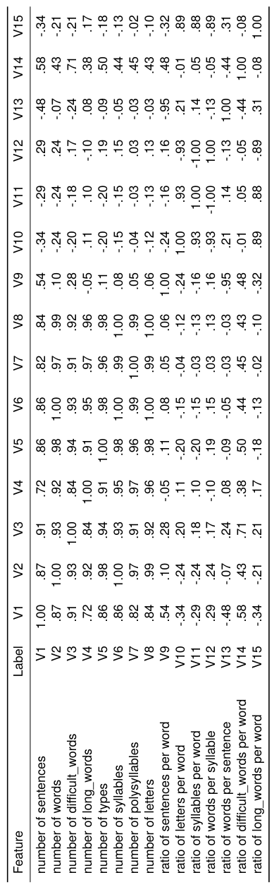
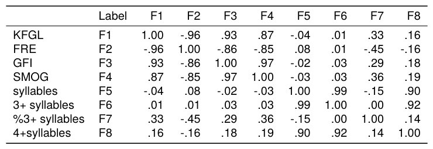
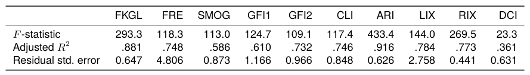

RAIL 2024Tafsiri ya mashine
Kurekebisha Vipimo Tisa vya Jadi vya Usomaji wa Maandishi kuwa Sesotho
Tafsiri ya mashine, haijakaguliwa na binadamu. Makala asili ndiyo toleo la rejeo; sentensi zilizopigiwa mstari ni zile ambazo ukaguzi wa kiotomatiki haukuwa na uhakika nazo.
Proceedings of the Fifth Workshop on Resources for African Indigenous Languages @ LREC-COLING 2024.
Tafsiri ya Ernst van Gassen (Arktos AI Lab), yenye leseni CC BY-NC 4.0 kama makala asili. Matumizi tena yanaruhusiwa kwa kutaja mwandishi, kwa matumizi yasiyo ya kibiashara tu. Waandishi asili hawajakagua wala kuidhinisha tafsiri hii.
Maandishi matupu ya kutumia tena, pamoja na leseni yake: Kiswahili · LESENI
Taasisi
Johannes Sibeko, Menno van Zaanen
Nelson Mandela University, South African Centre for Digital Language Resources
University way, Summerstrand, Port Elizabeth, Internal Box 340, Private bag X6001, Potchefstroom
Anwani za barua pepe zimeondolewa kwa sababu za faragha. Zinapatikana katika PDF asilia.
Muhtasari
Makala hii inajadili urekebishaji wa vipimo vya jadi vya usomaji wa Kiingereza kuwa Sesotho, lugha ya asili ya Kusini mwa Afrika yenye rasilimali chache. Tunatumia korasi ya usomaji iliyotafsiriwa ili kutoa vipengele vya kimaandishi kutoka kwa maandishi ya Sesotho na viwango vya usomaji kutoka kwa tafsiri za Kiingereza. Tunaangalia uwiano kati ya vipengele tofauti ili kuhakikisha kwamba vipengele visivyoshindana vinatumika katika vipimo vya usomaji. Kisha, kupitia uchanganuzi wa urejeleaji wa mstari, tunachunguza athari za vipengele vya maandishi kutoka kwa maandishi ya Sesotho kwenye viwango vya jumla vya usomaji (ambavyo hupimwa kutoka kwa tafsiri za Kiingereza). Kuanzia muundo wa vipimo vya jadi vya usomaji wa Kiingereza, mifano ya urejeleaji wa mstari hutambua migawo na vikatizo kwa vigezo tofauti vinavyozingatiwa katika fomula za usomaji za Sesotho. Mwishoni, tunapendekeza fomula kumi za usomaji kwa Sesotho (moja zaidi ya tisa za awali; tunatoa fomula mbili kulingana na muundo wa faharasa ya Gunning Fog). Pia tunaanzisha vikatizo vya faharasa ya Gunning Fog, faharasa ya Läsbarhets na faharasa ya Usomaji (ambazo hazina vikatizo katika vibadala vya Kiingereza) katika fomula za Sesotho.
Maneno Muhimu
Usomaji wa Maandishi, Sesotho, lugha yenye rasilimali chache
1. Utangulizi
Ripoti kutoka Progress in International Reading Literacy Study (PIRLS) zinaonyesha utendaji duni unaoendelea miongoni mwa wanafunzi wanaosoma kwa lugha za kiasili za Afrika Kusini (Roux et al., 2021). Katika viwango vya PIRLS, wanafunzi wanaofanya chini ya kigezo cha pointi 400, wanatatizika kupata taarifa za msingi kutoka katika maandishi, jambo linalofanya iwe vigumu kwao kujibu hata maswali rahisi zaidi. Kwa masikitiko, angalau 81% ya wanafunzi katika lugha za kiasili za Afrika Kusini wamekuwa wakifanya chini ya kigezo cha pointi 400 (Roux et al., 2021). Matokeo yake, utendaji kama huo unazuia kufikiwa kwa elimu bora jumuishi na yenye usawa katika kimsingi masomo yote ya shule ya upili kwani wanafunzi hawawezi kupata taarifa kutoka vyanzo vilivyoandikwa. Hatua zinahitajika kuchukuliwa ili kushughulikia changamoto hii ya kusoma na kuandika kama inavyoangaziwa na lengo la nne kati ya Malengo kumi na saba ya Maendeleo Endelevu ya Umoja wa Mataifa (UN), ambalo linaangazia umuhimu wa kuhakikisha elimu bora jumuishi na yenye usawa na kukuza fursa za kujifunza maishani kwa wote.
Suluhisho linalowezekana kwa viwango vya chini vya kusoma na kuandika ni kuhakikisha watoto wanajifunza kusoma vizuri, jambo ambalo linaweza kupatikana tu kupitia mazoezi ya kusoma (van Bergen et al., 2018). Kwa maneno mengine, wanafunzi wanahitaji kusoma ili ujuzi wao wa kusoma uimarike. Njia moja ya kuamsha hamu ya kusoma ni kuwapa wanafunzi fursa za kuchagua matini na muda wa kusoma (Rasheed, 2023). Kulingana na Rasheed (2023), wanafunzi ambao wana uhuru wa kuchagua nyenzo zao za kusoma huwa wanafanya vizuri zaidi kuliko wale wanaopangiwa matini. Hata hivyo, ni muhimu kutambua kwamba uchaguzi mbaya wa nyenzo za kusoma unaweza kuzuia ukuzaji wa stadi za kusoma wakati matini hazilingani vizuri na kiwango cha umahiri cha msomaji (Mohammed et al., 2023). Kwa kuzingatia hili, inakuwa dhahiri kwamba wadau wa elimu wanahitaji zana ya kutathmini usomaji wa matini ili kuwezesha utambuzi wa matini zinazolingana na kiwango cha uwezo wa kusoma wa msomaji. Uundaji wa vipimo vya usomaji kwa lugha mbalimbali za kiasili za Afrika Kusini utaruhusu vipimo vya kimalengo vya usomaji wa matini.
Kumbuka kwamba lugha za kiasili za Afrika Kusini zina rasilimali chache. Kwa hivyo, uchaguzi wa mbinu za uchunguzi wa usomaji wa matini kwa kiasi fulani ni mdogo. Hapa, tunapendekeza matumizi ya vipimo vya jadi vya usomaji vinavyozingatia sifa za juu juu za matini (Van Oosten et al., 2010; Zamanian and Heydari, 2012).
Licha ya hamu ya muda mrefu ya utafiti katika tathmini ya usomaji, vipimo vya jadi vya usomaji havijaboreshwa kwa ajili ya lugha za kiasili za Afrika Kusini (Leopeng, 2019). Ukosefu wa vipimo vya usomaji wa maandishi kwa lugha za kiasili za Afrika Kusini hadi sasa umesababisha matumizi ya vipimo vya usomaji vya Kiingereza (bila kurekebishwa) kwa uchambuzi wa usomaji katika lugha za kiasili za Afrika Kusini kama vile isiZulu (Land, 2015), isiXhosa (Carel, 2019; Leopeng, 2019), na Sesotho (Krige na Reid, 2017; Reid et al., 2019). Hivi karibuni, Sibeko (2023) anaripoti majaribio ya kuunda vipimo vya usomaji wa maandishi kwa Sesotho. Makala yao inaangazia rasilimali za msingi za lugha kwa Sesotho zinazohitajika kuunda vipimo vya usomaji. Hata hivyo, hawashughulikii uundaji halisi wa vipimo vya usomaji.
Katika makala hii, tunaangazia uundaji wa vipimo vya usomaji kwa Sesotho na si lugha zote kumi na mbili rasmi za Afrika Kusini. Ingawa mbinu sawa inaweza kutumika kwa lugha nyingine pia, lugha ya ishara, mojawapo ya lugha kumi na mbili rasmi, inaweza kuhitaji mbinu tofauti. Kwa ujumla, tunashughulikia swali la utafiti:
Je, vipimo vya kimapokeo vya usomaji vinawezaje kurekebishwa na kubadilishwa kwa ufanisi ili kuendana na sifa mahususi za Kisotho?
Ili kujibu swali hili, tunarekebisha vipimo vya kimapokeo vya usomaji kwa Kisotho kwa kutumia Kiingereza kama lugha saidizi yenye rasilimali nyingi kwa Kisotho chenye rasilimali chache. Dhana ya msingi ni kwamba maandishi ambayo ni rahisi kusomwa kwa Kisotho pia yatakuwa rahisi kusomwa yanapotafsiriwa kwa Kiingereza na maandishi magumu ya Kisotho yatatafsiriwa kuwa maandishi magumu ya Kiingereza. Kwanza, usuli wa uchunguzi huu unawasilishwa katika Sehemu ya 2, kisha mbinu inaelezwa katika Sehemu ya 3, ikifuatiwa na tathmini katika Sehemu ya 4. Hatimaye, tunawasilisha majadiliano yetu na hitimisho katika Sehemu ya 5.
2. Usuli
2.1. Muhtasari wa Kisotho
Kisotho ni lugha inayozungumzwa Kusini mwa Afrika. Ni mojawapo ya lugha mbili rasmi nchini Lesotho (Government of Lesotho, 1993), mojawapo ya lugha kumi na mbili rasmi nchini Afrika Kusini (Republic of South Africa, 2023), na mojawapo ya lugha rasmi zilizotengwa nchini Zimbabwe (Parliament of Zimbabwe, 2021). Zaidi ya hayo, Kisotho huzungumzwa nchini Zambia, Namibia, na Botswana. Angalau watu zaidi ya milioni kumi hutumia Sesotho kila siku. Hutumika na kufundishwa katika sekta za elimu ya msingi na ya juu.
Kisotho kina angalau lahaja sita zinazotambulika, nazo ni, Sekwena, Sekgolokwe, Serotse, Setlokwa, Sephuthi, na Setaung (Kula and Marten, 2008; Mohasi and Mashao, 2005; Nhlapo, 2021). Kati ya lahaja hizi, Sekwena iliendelezwa na hivyo imekuwa kiwango cha uandishi katika Kisotho (Nakin, 2009; Sekere, 2004). Aidha, kuna angalau tahajia mbili zinazotambulika rasmi kwa Kisotho, nazo ni, tahajia ya Afrika Kusini na ya Lesotho (Makutoane, 2022; Setaka, 2018; Setaka and Prinsloo, 2020; Sibeko, 2022). Utafiti ulioelezwa katika makala haya unategemea maandiko yaliyoandikwa kwa kutumia tahajia ya Kisotho ya Afrika Kusini.
2.2. Vipimo vya Jadi vya Usomaji
Katika makala haya, tunachunguza vipimo tisa vya jadi vya usomaji wa Kiingereza kwa ajili ya kuvirekebisha kwa Kisotho. Vipimo hivi vinajumuisha Flesch-Kincaid Grade Level (FKGL) (Kincaid et al., 1975), Flesch-Reading Ease (FRE) (Flesch, 1948, 1974), Simple Measure of Gobbledygook (SMOG) (Mc Laughlin, 1969; Zhou et al., 2017), na Gunning Fog Index (GFI) (Gunning, 1952, 1969), ambavyo hutegemea taarifa zinazohusiana na silabi, pamoja na vipimo vya Coleman-Liau index (CLI) (Coleman and Liau, 1975), Automatic Readability index (ARI) (Kaur et al., 2018; Smith and Senter, 1967), Readability index (RIX), na Läsbarhets index (LIX) (Björnsson, 1968; Björnsson, 1983) ambavyo vinategemea taarifa za urefu wa neno. Mwishowe, pia tunachunguza faharasa ya Dale-Chall (Dale and Chall, 1948) ambayo hutokana na orodha ya maneno yanayotumiwa kwa kawaida. Fomula za kila moja ya vipimo hivi, pamoja na aina ya matokeo, zinawasilishwa katika Jedwali la 1.
Mbinu ya jumla ya vipimo vinavyotegemea silabi ni kuzingatia idadi ya silabi katika kila neno na kuchakata matokeo kwa njia mahususi kwa kila kipimo. FKGL na FRE huchakata taarifa za silabi kwa kutathmini idadi ya silabi kwa kila neno huku vipimo vya SMOG na GFI vikitenga maneno "rahisi" yenye silabi mbili au chache, na hivyo kuzingatia tu maneno yenye silabi tatu au zaidi.
Kwa kuzingatia kwamba idadi ya silabi katika maneno marefu inategemea lugha, tulishuku kwamba mahitaji ya Kiingereza ya silabi 3+ huenda yasionyeshe maneno marefu kama yanavyopimwa kwa idadi ya silabi kwa kila neno katika Kisotho. Kwa mfano, katika utafiti sawa, Kusec et al. (2002) walirekebisha kiwango cha chini cha silabi zilizohesabiwa kutoka lugha saidizi ya Kiingereza hadi lugha yenye rasilimali chache, yaani Kikroeshia. Walilinganisha maneno 100 yanayotumiwa mara kwa mara katika Kiingereza na Kikroeshia ili kubaini tofauti kati ya hesabu za silabi katika lugha hizo mbili ili kubaini idadi ya silabi ambazo ni za kawaida katika maneno marefu ya Kikroeshia. Mwishowe, walirekebisha hitaji la maneno yenye silabi nyingi kuwa silabi 4+. Tunazingatia maneno marefu yenye silabi 3+ na 4+ katika majaribio yetu.
Mbali na taarifa za silabi, urefu wa neno na urefu wa sentensi pia ni vipengele vya kawaida vinavyotumiwa katika vipimo kama inavyoonekana katika Jedwali 1. Urefu wa neno kiorthografia, yaani, urefu wa maneno kama unavyopimwa kwa idadi ya herufi kwa kila neno (Ziegler et al., 2001), umekuwa mada ya kupendeza katika tafiti za lugha, huku utafiti ukionyesha tofauti katika lugha mbalimbali na baada ya muda. Kwa mfano, Bochkarev et al. (2015) wanachunguza mabadiliko ya urefu wa maneno katika Kiingereza na Kirusi kama yanavyoonekana kupitia maktaba za kielektroniki, Google Books, na Google Ngram Viewer. Matokeo yao yanaonyesha ongezeko la urefu wa wastani wa maneno katika lugha zote mbili, huku Kiingereza kikiongezeka kutoka herufi 4.4 kwa kila neno mwaka 1700 hadi 4.6 mwaka 2000. Zaidi ya hayo, wanabainisha kuwa nambari hizi ziliripotiwa tofauti katika tafiti nyingine ambapo urefu wa wastani wa maneno katika Kiingereza ulikuwa herufi 5.1 kwa kila neno huku ule wa Kirusi ukiwa juu kidogo kwa herufi 5.28 kwa kila neno (Bochkarev et al., 2015). Kulingana na Hefer (2013) maneno katika Kisotho kwa wastani ni karibu herufi nzima fupi kuliko katika Kiingereza. Kinyume chake, Loukatou (2019) anaonyesha urefu wa wastani wa neno wa 4.24 kwa Kisotho na wastani wa chini wa herufi 3.02 kwa kila neno kwa Kiingereza katika korasi yao ya ugawaji wa kupita kiasi.

Jedwali la 1: Vipimo vya kawaida vya usomaji vilivyochaguliwa (Kiwango cha Daraja la Flesch-Kincaid (FKGL), Urahisi wa Kusoma wa Flesch (FRE), Kipimo Rahisi cha Gobbledygook (SMOG), Fahirisi ya Ukungu wa Gunning (GFI), faharisi ya Coleman-Liau (CLI), Fahirisi ya Usomaji Kiotomatiki (ARI), Fahirisi ya Usomaji (RIX), faharisi ya Läsbarhets (LIX), faharisi ya Dale-Chall (DCI)), fomula zinazolingana, na aina ya matokeo.
3. Mbinu
Kulingana na De Clercq et al. (2014), kuna angalau hatua tatu za kuelezea wakati wa kuunda vipimo vya usomaji. Hizo ni (i) uundaji wa korasi ya usomaji, (ii) kuelezea mbinu, na (iii) kutekeleza kazi za utabiri (François na Fairon, 2012; Collins-Thompson, 2014). Tunaunda mjadala wa mbinu yetu ya kurekebisha vipimo vya jadi vya usomaji katika Kisotho kwa kutumia hatua hizi tatu hapa chini.
3.1. Hatua ya 1: Kundi la maandishi la usomaji
Katika muktadha wa lugha za kiasili za Afrika Kusini, ikiwemo Kisotho, kutopatikana kwa kundi la maandishi lililofafanuliwa kwa urahisi lenye viwango vya usomaji kunasisitiza haja ya kuunda kundi jipya la maandishi au kutumia upya kundi lililopo la maandishi ili kufunza vipimo vya usomaji. Katika muktadha huu, Sibeko na Van Zaanen (2021) wanapendekeza matumizi ya maandiko ya mitihani kwa ajili ya uundaji wa makundi ya maandishi ya usomaji kwa lugha za kiasili za Afrika Kusini.
Kwa ajili ya utafiti wetu, tunatumia korasi ya usomaji ya Sibeko (2024) ya tafsiri za Sesotho-Kiingereza. Kundi hili la maandishi linajumuisha tafsiri sambamba za kiwango cha hati za maandiko 80 ya ufahamu wa kusoma na uandishi wa muhtasari wa Kisotho yaliyopatikana kutoka kundi la maandishi la mtihani wa darasa la 12 (Sibeko na Van Zaanen, 2023). Kwa maandiko yaliyotolewa baada ya 2011, tafsiri za Kiingereza kimsingi ni tafsiri za kurudia kwa vile maandiko hayo awali yalitafsiriwa kutoka Kiingereza kwenda Kisotho kwa madhumuni ya mtihani. Kumbuka kwamba maandiko ya mtihani wa Kisotho yanaonyesha kuwa chanzo asili ni cha Kiingereza, lakini hayaonyeshi hasa ni wapi maandiko ya Kiingereza yanaweza kupatikana (hivyo basi mchakato wa tafsiri ya kurudia unatumika).
Korasi hii inajumuisha maneno 13,793, yanayojumuisha aina 6,040, ikiwa na urefu wa wastani wa sentensi wa maneno 17.73 katika Kisotho. Zaidi ya hayo, tafsiri za Kiingereza zinajumuisha maneno 12,005 pamoja na aina 6,130, zikiwa na urefu wa wastani wa sentensi wa maneno 15.75. Maandiko ya mitihani yanaanzia mwaka wa 2009 hadi 2019.
3.2. Hatua ya 2: Mbinu
Mbinu ya jumla inajumuisha hatua tatu. Kwanza, tunatoa vipengele muhimu vya maandiko kutoka kwa maandiko ya Kisotho. Pili, tunatumia tafsiri za Kiingereza zinazolingana na maandiko ya Kisotho ili kubainisha viwango vya usomaji kwa maandiko hayo kwa kutumia vipimo vya jadi vya usomaji. Kwa mbinu hii, tunafuata El-Haj na Rayson (2016) ambao wanaonyesha kwamba usomaji wa maandiko katika lugha yenye rasilimali nyingi unaweza kutumika kama kigezo cha kukadiria usomaji wa maandiko katika lugha yenye rasilimali chache. Vivyo hivyo, tunalinganisha usambazaji wa viwango vya usomaji katika Kisotho na vile vinavyozingatiwa katika tafsiri za Kiingereza. Tatu, tunatumia miundo ya urejeleaji wa mstari kubainisha athari za vipengele vya maandishi kutoka kwa maandishi ya Kisotho kwenye alama za jumla za vipimo tofauti vya usomaji vilivyokokotolewa kwenye tafsiri za Kiingereza.
Ili kutoa ufahamu wa ziada kuhusu athari za vipengele tofauti vya maandishi, tunachunguza sifa za maandishi zinazotumika katika vipimo vya jadi vya usomaji. Majadiliano mafupi yafuatayo yanaeleza baadhi ya vipengele vya maandishi vinavyozingatiwa katika makala hii.
3.2.1. Urefu wa maneno kwa herufi
Kuna maswala mawili makuu yanayohusiana na urefu wa wastani wa maneno katika Kisotho. Kwa upande mmoja, kama lugha ambatizi, maneno yanaweza kutarajiwa kuwa marefu kiasi katika Kisotho (Blanchard, 2011). Kwa upande mwingine, maneno yenye silabi moja ambayo yanaweza kujumuisha kati ya herufi moja na nne (na hasa maneno ya herufi moja) yanaweza kusababisha wastani mfupi zaidi kwa maandishi ya Kisotho (Messerschmidt et al., 2003). Zaidi ya hayo, urefu wa jumla wa maneno ya maandishi kwa herufi unaweza kuathiriwa na matumizi ya viambishi vya somo katika Kisotho. Ndani ya seti yetu ya data, maneno ya Kiingereza yanaonyesha wastani wa herufi 4.34 kwa kila neno, huku maneno ya Kisotho yakionyesha wastani wa herufi 4.07 kwa kila neno. Hata hivyo, ikizingatiwa kwamba wastani wa urefu wa neno katika Kisotho unafanana kiasi na ule wa Kiingereza, tunafuata mwongozo wa Kiingereza kwa vipimo vya LIX na RIX na hivyo tunachukulia maneno yenye herufi zaidi ya sita kama maneno marefu.
3.2.2. Urefu wa neno kwa silabi
Maneno ya silabi nyingi hurejelea maneno yenye silabi zaidi ya moja. Hata hivyo, vipimo vya jadi vilivyotumika katika utafiti huu, hasa vipimo vya SMOG na GFI, huchukulia tu maneno yenye silabi tatu au zaidi kama ya silabi nyingi, yenye ukungu, na changamano. Ndani ya seti yetu ya data, maneno ya Kiingereza yanaonyesha wastani wa silabi 1.26 kwa kila neno huku maandishi ya Kisotho yakionyesha silabi 2.0 kwa kila neno. Maneno ya Kisotho huwa na silabi nyingi zaidi kuliko maneno ya Kiingereza. Kwa hivyo, ingawa tunafafanua maneno yenye silabi nyingi (kama yanavyotumika katika vipimo tofauti) kama maneno yenye silabi tatu au zaidi, tunachunguza pia uwezekano wa kuongeza kiwango cha chini cha silabi katika maneno yenye silabi nyingi hadi maneno yenye silabi nne.
3.2.3. Maneno ya kawaida
Kipimo cha DCI kinategemea dhana kwamba kuna maneno ambayo hutumiwa kwa kawaida na kwa hivyo yanapaswa kuwa rahisi kusoma. Kulingana na njia hii, maneno ambayo hayaonekani kwenye orodha ya maneno yanayotumiwa mara kwa mara yanachukuliwa kuwa magumu. Kwa jaribio letu, tunatumia orodha ya maneno ya kawaida ya Kisotho iliyokusanywa na Sibeko na De Clercq (2023). Hata hivyo, tunahitaji kutumia orodha hii kwa tahadhari, kwa kuwa haikutokana na maandishi ya kielimu. Kwa bahati mbaya, hatufahamu orodha nyingine yoyote ya maneno inayopatikana kwa matumizi katika muktadha huu.
3.2.4. Sampuli
Baadhi ya fomula, kama vile vipimo vya DCI na CLI, zinahitaji sampuli za kiasi kidogo cha maandishi. Kwa kuwa maandiko katika majaribio haya ni mafupi kiasi, tunaacha hatua za sampuli. Kwa njia hii, kwa mfano, idadi ya sentensi katika fomula ya CLI inarejelea sentensi zote katika maandishi badala ya seti ndogo ya sentensi zilizopigwa sampuli. Kama inavyoweza kuonekana katika Jedwali 1, fomula ya CLI inazingatia tu urefu wa maneno kama unavyohesabiwa kwa herufi, na sentensi katika maandishi yote (kwa fomula zote za Kiingereza na Kisotho).
3.3. Hatua ya 3: Kazi za utabiri
3.3.1. Uhusiano
Kabla ya kuunda vipimo vya usomaji wa maandishi kwa Kisotho, kwanza tunachunguza uhusiano kati ya vipengele tofauti vya kimaandishi vinavyotegemeza vipimo vya usomaji. Uchunguzi huu unatoa ufahamu kuhusu asili ya vipengele vya maandishi ya Kisotho.
Uchunguzi wa uhusiano kati ya vipengele vya maandishi vilivyotumika katika fomula za jadi za usomaji ulikokotolewa kwa kutumia kipimo cha uwiano wa Pearson. Matokeo ya uwiano huu yanawasilishwa katika Jedwali 2. Zingatia kwamba Lebo V1-16 zinatumika kuwakilisha vipengele katika safu wima 1 hadi 16. Kinachostahili kuzingatiwa, uwiano wote una umuhimu wa kitakwimu kwa p < .05.
Uchunguzi wa vipengele vya maandishi ya Kisotho kupitia uchanganuzi wa uwiano unafichua matokeo ya kuvutia. Kwa mfano, upatanishi kamili unafichuliwa kati ya hesabu za neno na silabi, na pia kati ya hesabu za silabi na herufi. Hii inapendekeza uhusiano thabiti na unaotabirika kati ya vipengele hivi kwa kuwa silabi zaidi zitasababisha maneno marefu zaidi. Zaidi ya hayo, uwiano chanya imara unajitokeza, ukionyesha uhusiano kati ya silabi kwa neno na marudio ya maneno yenye silabi nyingi, wakati uwiano hasi unaonyesha kwamba ongezeko la hesabu za herufi kwa neno linaweza kusababisha sentensi, maneno, na maneno marefu machache.
Pia tulichunguza uwiano kati ya fomula zenye msingi wa silabi na vipengele vya maandishi vinavyohusiana na silabi. Matokeo katika Jedwali 3 yanafichua uwiano hasi dhaifu kati ya idadi ya silabi na alama za FKGL, GFI, na faharisi ya SMOG. Uchunguzi huu unapendekeza kwamba hesabu za silabi katika Kisotho zinalingana na zile za Kiingereza, ikionyesha kwamba maandishi yenye hesabu za juu za silabi yana uwezekano mkubwa wa kuwa magumu zaidi kusoma.
Kama ilivyotajwa awali, tulifikiria pia kurekebisha vigezo vya kufafanua maneno yenye silabi nyingi kwa kuchunguza ongezeko linalowezekana kutoka silabi tatu hadi kiwango cha chini cha silabi nne (silabi 4+). Matokeo yetu yanaonyesha kwamba kudumisha kiwango cha chini cha silabi tatu kunaonyesha mara kwa mara uhusiano imara na alama za usomaji ikilinganishwa na kiwango cha chini cha silabi nne. Kwa hiyo, kwa Kisotho, tunazingatia pia silabi 3+ tu kama ilivyo katika fomula asili za Kiingereza.

Jedwali la 2: Uhusiano wa vipengele vya maandishi vinavyotumika katika vipimo vya usomaji vilivyokokotolewa kutoka kwa maandishi ya Kisotho.
3.3.2. Miundo ya Urejeleaji wa Mstari
Hatimaye, tunaunda miundo ya urejeleaji wa mstari kwa kutumia kazi ya 'lm' ya muundo wa urejeleaji wa mstari katika R ili kubainisha vigawo vya vipengele tofauti vya kimaandishi kwa kutumia data yetu ya mafunzo ya Kisotho na viwango vya usomaji vilivyokokotolewa kwenye maandishi ya Kiingereza. Miundo ya mifano ya urejeshaji wa mstari ya Kisesotho inafanana na ile ya vipimo vya kusomwa vya Kiingereza. Kwa njia hii, tunajaribu kuhakikisha kwamba thamani za usomaji zilizokokotolewa kwa kutumia kipimo fulani cha usomaji zinatumika kuunda kipimo cha usomaji cha Sesotho kinachotumia muundo sawa na vipengele vya kimaandishi sawa na kipimo cha Kiingereza.
Kisha tukaunda mifano ya urejeleaji wa mstari kwa vipimo tofauti. Fomula zinawasilishwa katika Jedwali la 4. Fomula zetu za usomaji zilizopendekezwa kwa Sesotho zinadumisha kiwango cha uhifadhi wa muundo kwa fomula za DCI, CLI, SMOG, FRE, na FKGL. Kumbuka kwamba toleo lililorahisishwa zaidi la fomula ya CLI lingetumia hesabu halisi na si asilimia na kusababisha CLISesotho = -3.683470 + 3.8782( #herufi #neno ) - 72.7569( #sentensi #neno ).
Wakati wa kulinganisha uzani wa fomula za Sesotho na zile za fomula za Kiingereza, tunaona mambo kadhaa. Kwanza, kuna upunguzaji wa vigawo vya silabi kwa neno ndani ya fomula za Sesotho kuhusiana na zile za Kiingereza. Kwa mfano, hii inajidhihirisha kama uzani ulioongezeka na hasi kwa silabi kwa neno ndani ya fomula ya Sesotho ya FRE.
Pili, tunapendekeza miundo miwili kwa ajili ya fomula ya GFI. Matoleo yote mawili yanaanzisha kikatizo kwa fomula, kinachohusisha utoaji wa 0.177916, ambao ni tofauti na uundaji wa awali. Fomula ya kwanza iliyopendekezwa, GF I(1)Sesotho, inafuata muundo wa fomula asilia ya Kiingereza kwa ukaribu zaidi ingawa kikatizo kinaongezwa. Fomula ya pili, GF I(1)Sesotho inaanzisha mgawo kwa asilimia ya maneno changamano, na hivyo kupotoka kutoka kwa muundo asilia.
LIX na RIX za Kiingereza hazijumuishi uzani. Ili kuoanisha thamani za usomaji zilizopatikana kupitia utumiaji wa vipimo vya usomaji vya Kiingereza kwenye maandiko ya mitihani yaliyotafsiriwa, na sifa za maandiko zilizotazamwa katika maandiko ya Kisotho, ilikuwa ni lazima kuanzisha vipengele vya uzani. Marekebisho haya yalihakikisha ulinganifu sahihi zaidi kati ya thamani za usomaji na fomula zilizorekebishwa. Kwa LIX, athari ya maneno kwa kila sentensi inapewa uzani, wakati asilimia ya maneno marefu inabaki bila kubadilishwa. Hata hivyo, katika fomula ya RIX, tunatoa uzito kwa sehemu ya maneno marefu kwa kila sentensi. Kumbuka kwamba pia tunaanzisha vikatizo kwa LIXSesotho na RIXSesotho.

Jedwali la 3: Uwiano wa vipimo vinavyotegemea silabi na taarifa za silabi zilizokokotolewa kwenye maandishi ya Kisotho.

Jedwali la 4: Vipimo vya usomaji na fomula za Kisotho zilizorekebishwa zinazolingana.
Zaidi ya hayo, kupungua dhahiri kwa uzito unaohusishwa na sentensi kwa kila neno kunaonekana katika toleo la Kisotho la CLI, wakati wa kulinganisha na mwenzake wa Kiingereza. Vivyo hivyo, kikatizo cha CLISesotho ni cha chini kwa kiasi kikubwa ikilinganishwa na lahaja ya Kiingereza. Vivyo hivyo, tofauti inaonekana katika kikatizo cha fomula ya ARISesotho. Licha ya mgawo thabiti wa maneno kwa kila sentensi, ARI ya Kisotho inahusisha uzani uliopunguzwa wa herufi kwa kila neno.
Hatimaye, mgawo wa maneno magumu unaonekana kuwa mdogo kwa kiasi fulani katika fomula ya Sesotho CLI, ikilinganishwa na fomula ya Kiingereza. Kinyume chake, fomula ya Sesotho CLI inatoa mgawo mkubwa zaidi kwa maneno kwa kila sentensi.
4. Tathmini
Matokeo ya muhtasari wa urejeleaji wa mstari hutoa takwimu tano za kutathmini utendaji wa kila modeli na umuhimu wa migawo yake. Tunazingatia Adjusted R-squared, F -statistic, na kosa la kawaida la mabaki. Matokeo ya tathmini yanawasilishwa katika Jedwali la 5.

Jedwali la 5: Tathmini za modeli za urejeleaji wa mstari zilizorekebishwa kwa Sesotho. Kumbuka kwamba thamani za p zote zina umuhimu wa kitakwimu kwa p < .001.
Kwanza, F -statistic ni kiashiria cha uhalali wa kina wa modeli. Inaangazia umuhimu wake wa kitakwimu katika modeli zote, kama inavyothibitishwa na p-values zilizozingatiwa (p < .001). Uthibitisho huu unashuhudia mchango wa pamoja wa sifa za utabiri katika kufafanua tofauti katika usomaji wa maandishi, na hivyo kuthibitisha kwamba matokeo hayawezekani kabisa kuwa matokeo ya nasibu tu.
Pili, kipimo cha Adjusted R-squared kinaonyesha ni kiasi gani vigezo huru vinaelezea tofauti za data. Uchambuzi wetu unaonyesha viwango vya juu hasa kwa ARISesotho, ikimaanisha kwamba vigezo vya herufi kwa neno na sentensi kwa neno vinachangia takriban 91% ya uwezo wa utabiri unaohusishwa na alama za ARI. Hata hivyo, matokeo tofauti yanaonekana kwa fomula ya SMOG, ambapo idadi ya maneno yenye silabi nyingi inachangia asilimia 59.16 tu ya ushawishi wa jumla wa utabiri. Tofauti hii inaangazia viwango tofauti vya mchango unaotolewa na sifa za utabiri katika mifano iliyoundwa.
Mwishowe, makosa ya kawaida ya mabaki ya chini yanaelezea mkengeuko wa kawaida wa mabaki, ambapo viwango vya chini vinaonyesha matokeo bora.
5. Majadiliano na hitimisho
Msingi wa kimantiki wa utafiti huu ni ukosefu wa mbinu ya kimalengo ya kutambua viwango vya usomaji wa maandishi katika Sesotho. Tunakisia kwamba viwango vya chini vya ujuzi wa kusoma na kuandika katika lugha za kiasili za Afrika Kusini, ikiwemo Sesotho, vinaweza kuzidishwa na uteuzi usiofaa wa nyenzo za maandishi, hasa ikizingatiwa idadi ndogo ya maandishi yanayopatikana katika lugha za kiasili. Tunatarajia kwamba kuweza kupima kiwango cha usomaji wa maandishi katika lugha hiyo kutasaidia wanafunzi na walimu katika utambuzi wa nyenzo za kusoma zilizopangwa kwa usahihi. Kwa upande mwingine, matumizi ya mfumo wa tathmini ya usomaji wenye lengo yataboresha upatikanaji wa elimu bora (elimu ya kusoma na hivyo elimu kwa ujumla) katika Sesotho. Hata hivyo, tunakiri kwamba vikwazo vilivyohusishwa awali na vipimo vya jadi vya usomaji vinaendelea kutumika, hata katika muktadha wa marekebisho yetu yanayopendekezwa.
Ikizingatiwa kwamba Sesotho, kama lugha nyingine nyingi za kiasili katika Kusini mwa Afrika, ni lugha yenye rasilimali chache, hakuna mkusanyiko wa maandishi ulio na lebo za usomaji unaofaa. Ili kutatua suala hili, maandishi ya kielimu yaliyoandikwa awali katika Sesotho yalitafsiriwa kwa Kiingereza. Tafsiri za Kiingereza kisha zikawa chanzo cha tathmini ya usomaji kwani vipimo vya jadi vya usomaji wa Kiingereza vinaweza kutumika. Kwa kuzingatia vipengele vya maandishi vilivyotolewa kutoka kwa maandishi ya Sesotho, vikiunganishwa na thamani za usomaji wa Kiingereza, mifano ya urejeleaji wa mstari inaweza kuundwa. Muundo wa miundo ya urejeshaji wa mstari (k.m., vipengele vya kimaandishi na jinsi vinavyoshikamana katika fomula) unachukuliwa kutoka kwa vipimo vya Kiingereza vinavyolingana ambavyo vilitumika kukokotoa thamani za usomaji.
Miongoni mwa fomula za usomaji zilizorekebishwa ndani ya makala hii, sita zinategemea kigezo cha urefu wa sentensi. Fomula za Kisotho zilizorekebishwa mara kwa mara zinaipa uzito mkubwa zaidi urefu wa sentensi ikilinganishwa na fomula asilia za Kiingereza tulizozirekebisha kwa Kisotho. Kumbuka kwamba, licha ya msisitizo huu, hakuna uwiano imara unaojitokeza kati ya urefu wa sentensi na vigezo vingine vinavyozingatiwa katika fomula zinazolenga urefu wa sentensi. Hata hivyo, uchanganuzi wa mgawo wa fomula ya CLI unaangazia athari ya uwiano hasi imara kati ya sentensi kwa neno na maneno kwa sentensi. Uchunguzi huu unasisitiza kwamba ingawa urefu wa sentensi unapewa migawo ya juu zaidi katika fomula nyingi za Kisotho, kigezo cha sentensi kwa neno kinapokea uzito mdogo sana katika fomula ya CLISesotho, hivyo kusisitiza umashuhuri wa kipengele cha urefu wa sentensi katika kubainisha usomaji wa maandishi ya Kisotho. Hata hivyo, ni muhimu pia kutambua kwamba vipengele hivi ni kinyume cha kila kimoja. Kwa hivyo, vinatarajiwa kuathiri viwango vya usomaji kwa njia zinazopingana.
Zaidi ya hayo, uchunguzi wa uwiano kati ya urefu wa sentensi na urefu wa neno kwa mujibu wa hesabu za silabi unaonyesha uhusiano hasi wa wastani. Hii inapendekeza kwamba kadiri urefu wa sentensi unavyoongezeka, silabi kwa kila neno huonyesha upungufu mdogo. Kimsingi, ongezeko la urefu wa sentensi linalingana na upungufu mdogo katika silabi na herufi kwa kila neno, kutokana na uwiano hasi uliopo na herufi kwa kila neno. Uchunguzi huu unasisitiza urefu wa sentensi kama kitabiri kikuu cha usomaji wa maandishi ya Kisotho.
Kwa kadiri ya ufahamu wetu, matokeo ya makala haya yanawasilisha fomula za kwanza kwa lugha ya kiasili ya Afrika Kusini na za kwanza kwa kundi la lugha la Kisotho-Tswana Kusini mwa Afrika.
Ingawa mifano yetu imefunzwa kwa maandishi ya kielimu, hasa maandishi ya ufahamu wa kusoma na uandishi wa muhtasari, upatikanaji wa fomula sanifu na zisizo na upendeleo za usomaji hutoa msingi imara wa kutumia mbinu za ujifunzaji wa mashine kupima usomaji wa maandishi katika Kisotho. Zaidi ya hayo, mbinu zilizoainishwa katika makala haya zinaweza kutumika katika uundaji wa vipimo vya usomaji kwa lugha nyingine zenye rasilimali chache.
5.1. Mapungufu
Mbinu yetu katika makala haya ina kikwazo cha kutegemea maandishi yaliyoandikwa na vipimo vya usomaji vilivyopo ambavyo havikuundwa awali kwa ajili ya Kisotho. Kwanza, tunafanya dhana kwamba matini zilizotafsiriwa zina usomaji unaofanana. Matini hizo hutafsiriwa kiotomatiki na kusahihishwa kwa mikono ili kuhakikisha matini zinazofanana zaidi kwa Kiingereza ikilinganishwa na matini za Kisotho. Suluhisho linalowezekana litakuwa kuendeleza mkusanyiko wa maandishi ambayo yanalenga hasa vigezo vya usomaji kulingana na maandishi ya Sesotho (pekee). Kwa kuwa hakuna maandishi mengi yanayopatikana kwa umma kwa lugha ya Sesotho, hili litaendelea kuwa changamoto.
Pili, ili kuhakikisha utumiaji wa vitendo wa vipimo, uchunguzi wa kijarabati unaohusisha washiriki binadamu unapaswa kufanywa. Tathmini kama hiyo ingejumuisha kuchagua na kupangilia matini kwa kutumia fomula zetu zilizopendekezwa, na baadaye kusimamia matini hizi kwa wanafunzi ndani ya viwango vya daraja vilivyoonyeshwa na fomula zetu. Mbinu hii ni muhimu kwa kutathmini athari za kijamii za fomula zetu. Hata hivyo, pia inaleta changamoto katika hitaji la vigezo vilivyofafanuliwa vizuri ili kutofautisha mafanikio au kushindwa katika majaribio ya kusoma ambayo yangesimamiwa kwa washiriki kwa ajili ya tathmini ya viwango vya usomaji vilivyopendekezwa na fomula zetu kwa Kisotho.
Hatimaye, ili kupima ipasavyo athari za vipimo vya usomaji kupitia ufanisi wa uteuzi wa matini mwafaka, vigezo vya kutambua "mafanikio" katika kusoma matini za Kisotho vitahitaji kuandaliwa. Hatua hii ni muhimu katika muktadha wa Kisotho (na lugha nyingine za kiasili za Afrika Kusini), hasa kutokana na changamoto zilizopo ambazo wanafunzi wa Afrika Kusini kwa ujumla hukumbana nazo katika kusoma.
5.2. Tafiti za baadaye
Matokeo yaliyojadiliwa katika sehemu hii yanadhihirisha njia kadhaa za tafiti zinazowezekana za baadaye. Kwanza, uchunguzi zaidi wa vipengele vilivyotumika unaweza kutoa vipimo mwafaka zaidi kwa Kisotho. Kwa mfano, idadi bora ya herufi kwa kila neno inayolingana na maneno marefu ya Kisotho inabaki kuwa njia ya kuvutia. Hili linahusisha kuchunguza kwa makini uwiano kati ya hesabu tofauti za herufi kwa kila neno na alama zinazotokana ili kubaini idadi ya juu zaidi yenye uwiano chanya kwa viwango vya usomaji kwa ajili ya kufafanua maneno marefu kwa Kisotho. Katika makala haya, tunatumia fasili ya Kiingereza ya maneno marefu.
Pili, matumizi ya viwango vya darasa vilivyopo, ingawa havijajaribiwa ndani ya muktadha wa elimu wa Afrika Kusini, yanasisitiza njia ya utafiti wa baadaye. Uchunguzi wa baadaye unapaswa kuchunguza utumikaji wa FRE, CLI, LIX, na viashiria vingine kwa viwango vya darasa vya Afrika Kusini ili kuboresha umuhimu wa kimuktadha wa vipimo hivi. Kwa sasa, tunategemea marekebisho yaliyopo ya alama za usomaji kwa vipimo vya FRE, LIX, na RIX ndani ya muktadha wa Afrika Kusini kulingana na kazi za Bargate (2012), na Leopeng (2019). Pengine kazi za baadaye zinaweza kufikiria kurekebisha upya alama hizo kwa madarasa ya Afrika Kusini kupitia mbinu za tathmini zinazotegemea binadamu.
Hatimaye, vipimo havitengenezwi peke yake. Matumizi ya vitendo ya vipimo yatahitaji kuchunguzwa katika muktadha sahihi wa kielimu. Je, vipimo hivyo kwa kweli vinaruhusu utambuzi wa maandishi yanayofaa kwa mwanafunzi? Je, tunaweza kuwategemea walimu kutathmini hili au tunahitaji mbinu nyingine za tathmini? Bila shaka, zaidi ya hayo, tutahitaji kuchunguza jinsi wasomaji wanavyopitia matokeo ya kipimo cha usomaji. Hatimaye, tunatumaini kwamba utafiti huu utasaidia katika kuboresha ujuzi wa kusoma wa wanafunzi nchini Afrika Kusini ambao tunatumaini kuuona katika matokeo ya baadaye ya PIRLS.
Maelezo
1 Uwiano wa idadi ya sentensi kwa idadi ya maneno
6. Marejeo
Karen Bargate. 2012. The readability of managerial accounting and financial management textbooks. Meditari Accountancy Research, 20(1):4-20.
Carl-Hugo Björnsson. 1968. Läsbarhet. Bokförlaget Liber, Stockholm, Sweden.
Carl-Hugo Björnsson. 1983. Readability of newspapers in 11 languages. Reading Research Quarterly, pages 480-497.
Daniel Blanchard. 2011. Unsupervised word segmentation: An investigation of sub-word features. Online on github. https://dan-blanchard.github.io/papers/proposal.pdf.
Vladimir V Bochkarev, Anna V Shevlyakova, and Valery D Solovyev. 2015. The average word length dynamics as an indicator of cultural changes in society. Social Evolution and History, 14(2):153-175.
David Carel. 2019. 4 ways to stay safe online-developing a text difficulty indicator for isiXhosa early grades. In Policy Commons. Research on Socio-Economic Policy. Available at: https://policycommons.net/artifacts/2105074/ 4-ways-to-stay-safe-online/ 2860372/.
Meri Coleman and Ta Lin Liau. 1975. A computer readability formula designed for machine scoring. Journal of Applied Psychology, 60(2):283.
Kevyn Collins-Thompson. 2014. Computational assessment of text readability: A survey of current and future research. ITL-International Journal of Applied Linguistics, 165(2):97-135.
Edward Dale and J S Chall. 1948. A formula for predicting readability: Instructions. Educational research bulletin, pages 37-54.
Orphée De Clercq, Véronique Hoste, Bart Desmet, Philip Van Oosten, Martine De Cock, and Lieve Macken. 2014. Using the crowd for readability prediction. Natural Language Engineering, 20(3):293-325.
Mahmoud El-Haj and Paul Rayson. 2016. Osman: A novel Arabic readability metric. Procedia Computer Science, 142:38-49.
Rudolph Flesch. 1948. A new readability yardstick. Journal of applied psychology, 32(3):221-233.
Rudolph Flesch. 1974. The art of readable writing, 2nd edition. Harper, New York.
Thomas François and Cedrick Fairon. 2012. An "AI readability" formula for French as a foreign language. In Proceedings of the 2012 Joint Conference on Empirical Methods in Natural Language Processing and Computational Natural Language Learning, pages 466-477, New Brunswick, New Jersey, USA. Association for Computational Linguistics.
Government of Lesotho. 1993. The Constitution of Lesotho. Government Printer, Maseru.
Robert Gunning. 1952. The technique of clear writing. McGraw-Hill: New York.
Robert Gunning. 1969. The fog index after twenty years. Journal of Business Communication, 6(2):3-13.
Esté Hefer. 2013. Reading first and second language subtitles: Sesotho viewers reading in Sesotho and English. Southern African Linguistics and Applied Language Studies, 31(3):359-373.
Sukhpuneet Kaur, Kulwant Kaur, and Parminder Kaur. 2018. The influence of text statistics and readability indices on measuring university websites. International Journal of Advanced Research in Computer Science, 9(1):403-414.
Peter Kincaid, Robert P Fishburne Jr, Richard L Rogers, and Brad S Chissom. 1975. Derivation of new readability formulas (automated readability index, fog count and Flesch Reading Ease formula) for navy enlisted personnel. Report, Defense Technical Information Center.
Daleen Krige and Marianne Reid. 2017. A pilot investigation into the readability of Sesotho health information pamphlets. Communitas, 22:113-123.
Nancy C Kula and Lutz Marten. 2008. Central, east and southern african languages. In Peter Austin, editor, One Thousand Languages, pages 86-111. Ivy Press/University of California Press.
Sanja Kusec, Miroslav Mastilica, Gordana Pavlekovic, and Luka Kovacic. 2002. Readability of patient information on diabetes on the Croatian Web sites. In Health Data in the Information Society, Netherlands, pages 128-132. IOS Press, Amsterdam.
Sandra Land. 2015. Reading and the orthography of isiZulu. South African Journal of African Languages, 35(2):163-175.
Makiti Thelma Leopeng. 2019. Translations of informed consent documents for clinical trials in South Africa: Are they readable? Thesis, University of Cape Town.
Georgia Loukatou. 2019. From phonemes to morphemes: Relating linguistic complexity to unsupervised word over-segmentation. In Proceedings of TyP-NLP: The First Workshop on Typology for Polyglot NLP, Florence, Italy, New Jersey, USA. Association of Computational Linguistics.
Tshokolo J Makutoane. 2022. 'The people divided by a common language': The orthography of Sesotho in Lesotho, South Africa, and the implications for Bible translation. HTS Teologiese Studies/Theological Studies, 78(1):9.
Harry Mc Laughlin. 1969. SMOG grading-a new readability formula. Journal of reading, 12(8):639-646.
Hans Messerschmidt, JJE Messerschmidt, and DP Thulo. 2003. A human-assisted computer generated LA-grammar for simple sentences in Southern Sotho. Southern African Linguistics and Applied Language Studies, 21(1-2):41-47.
Lubna Ali Mohammed, Musheer Abdulwahid Aljaberi, Antony Sheela Anmary, and Mohammed Abdulkhaleq. 2023. Analysing English for science and technology reading texts using Flesch Reading Ease online formula: the preparation for academic reading. In International Conference on Emerging Technologies and Intelligent Systems, pages 546-561, New York. Springer.
Lehlohonolo Mohasi and Daniel Mashao. 2005. Phonetization for text-to-speech synthesis in Sesotho. In The sixteenth annual symposium of the Pattern Recognition Association of South Africa, pages 121-122, Langebaan, South Africa. Citeseer.
Rosalia Moroesi Nakin. 2009. An examination of language planning and policy in the Eastern Cape with specific reference to Sesotho: A socioliguistic study. Ph.D. thesis, Nelson Mandela Metropolitan University, South Africa.
Moselane Andrew Nhlapo. 2021. Historical perspectives on the development of Sesotho linguistics with reference to syntactic categories. Ph.D. thesis, University of the Free State, South Africa.
Parliament of Zimbabwe. 2021. The Constitution of Zimbabwe. Veritas, Harare.
Michelle Rasheed. 2023. Kindling a desire to read: A review of three young adult novels. South Carolina Association for Middle Level Education Journal, 2(1):109-113.
Marianne Reid, Mariette Nel, and Ega Janse Van Rensburg-Bonthuyzen. 2019. Development of a Sesotho health literacy test in a South African context. African journal of primary health care & family medicine, 11(1):1-13.
Republic of South Africa. 2023. Constitution eighteenth amendment bill. Department of Justice and Correctional Services, Pretoria.
Karen Roux, S van Staden, and M Tshele. 2021. Progress in International Reading Literacy Study 2021: South African Preliminary Highlights Report. Department of Basic Education, Pretoria, South Africa.
Ntaoleng Belina Sekere. 2004. Sociolinguistic variation in spoken and written Sesotho: A case study of speech varieties in Qwaqwa. Thesis, University of South Africa.
Mmasibidi Setaka. 2018. Corpus-based Lexicography for Sesotho. Ph.D. thesis, University of Pretoria, South Africa.
Mmasibidi Setaka and Danie J Prinsloo. 2020. A critical evaluation of three sesotho dictionaries. Lexikos, 30:445-469.
Johannes Sibeko. 2022. Tshebediso ya melao kabong ya dinoko tsa Sesotho. Southern African Linguistics and Applied Language Studies, 40(4):494-506.
Johannes Sibeko. 2023. Using classical readability formulas to measure text readability in Sesotho. In Tomaž Erjavec and Maria Eskevich, editors, Selected papers from the CLARIN Annual Conference 2022, volume 198, pages 120--132. Linköping Electronic Conference Proceedings, Prague, Czechia.
Johannes Sibeko. 2024. Harnessing google translations to develop a readability corpus for sesotho: An exploratory study. Journal of the Digital Humanities Association of Southern Africa, 5:1-12.
Johannes Sibeko and Orphée De Clercq. 2023. A corpus-based list of frequently used words in Sesotho. In Proceedings of the Fourth workshop on Resources for African Indigenous Language (RAIL 2023), Dubrovnik, Croatia, pages 32-41, New Brunswick, New Jersey, USA. Association for Computational Linguistics.
Johannes Sibeko and Menno Van Zaanen. 2021. An analysis of readability metrics on English exam texts. Journal of the Digital Humanities Association of Southern Africa, 3(1):1-11.
Johannes Sibeko and Menno Van Zaanen. 2023. A data set of final year high school examination texts of South African home and first additional language subjects. Journal of Open Humanities Data, 9(9):1-6.
Edgar A Smith and R.J Senter. 1967. Automated readability index. Clearing house for Federal Scientific and Technical information, Cincinnati, Ohio.
Elsje van Bergen, Margaret J Snowling, Eveline L de Zeeuw, Catharina EM van Beijsterveldt, Conor V Dolan, and Dorret I Boomsma. 2018. Why do children read more? the influence of reading ability on voluntary reading practices. Journal of Child Psychology and Psychiatry, 59(11):1205-1214.
Phillip Van Oosten, Dries Tanghe, and Véronique Hoste. 2010. Towards an improved methodology for automated readability prediction. In Proceedings of the 7th Conference on International Language Resources and Evaluation (LREC 2010), Valletta, Malta, pages 775-782, Paris. European Language Resources Association (ELRA).
Mostafa Zamanian and Pooneh Heydari. 2012. Readability of texts: State of the art. Theory and Practice in Language Studies, 2(1):43-53.
Shixiang Zhou, Heejin Jeong, and Paul A Green. 2017. How consistent are the best-known readability equations in estimating the readability of design standards? IEEE Transactions on Professional Communication, 6:97-111.
Johannes C Ziegler, Conrad Perry, Arthur M Jacobs, and Mario Braun. 2001. Identical words are read differently in different languages. Psychological science, 12(5):379-384.
English na Kiswahili
Adapting Nine Traditional Text Readability Measures into Sesotho
Kurekebisha Vipimo Tisa vya Jadi vya Usomaji wa Maandishi kuwa Sesotho
Affiliations
Johannes Sibeko, Menno van Zaanen
Nelson Mandela University, South African Centre for Digital Language Resources
University way, Summerstrand, Port Elizabeth, Internal Box 340, Private bag X6001, Potchefstroom
,
Taasisi
Johannes Sibeko, Menno van Zaanen
Nelson Mandela University, South African Centre for Digital Language Resources
University way, Summerstrand, Port Elizabeth, Internal Box 340, Private bag X6001, Potchefstroom
,
Abstract
Muhtasari
This article discusses the adaptation of traditional English readability measures into Sesotho, a Southern African indigenous low-resource language. We employ the use of a translated readability corpus to extract textual features from the Sesotho texts and readability levels from the English translations. We look at the correlation between the different features to ensure that non-competing features are used in the readability metrics. Next, through linear regression analyses, we examine the impact of the text features from the Sesotho texts on the overall readability levels (which are gauged from the English translations). Starting from the structure of the traditional English readability measures, linear regression models identify coefficients and intercepts for the different variables considered in the readability formulas for Sesotho. In the end, we propose ten readability formulas for Sesotho (one more than the initial nine; we provide two formulas based on the structure of the Gunning Fog index). We also introduce intercepts for the Gunning Fog index, the Läsbarhets index and the Readability index (which do not have intercepts in the English variants) in the Sesotho formulas.
Makala hii inajadili urekebishaji wa vipimo vya jadi vya usomaji wa Kiingereza kuwa Sesotho, lugha ya asili ya Kusini mwa Afrika yenye rasilimali chache. Tunatumia korasi ya usomaji iliyotafsiriwa ili kutoa vipengele vya kimaandishi kutoka kwa maandishi ya Sesotho na viwango vya usomaji kutoka kwa tafsiri za Kiingereza. Tunaangalia uwiano kati ya vipengele tofauti ili kuhakikisha kwamba vipengele visivyoshindana vinatumika katika vipimo vya usomaji. Kisha, kupitia uchanganuzi wa urejeleaji wa mstari, tunachunguza athari za vipengele vya maandishi kutoka kwa maandishi ya Sesotho kwenye viwango vya jumla vya usomaji (ambavyo hupimwa kutoka kwa tafsiri za Kiingereza). Kuanzia muundo wa vipimo vya jadi vya usomaji wa Kiingereza, mifano ya urejeleaji wa mstari hutambua migawo na vikatizo kwa vigezo tofauti vinavyozingatiwa katika fomula za usomaji za Sesotho. Mwishoni, tunapendekeza fomula kumi za usomaji kwa Sesotho (moja zaidi ya tisa za awali; tunatoa fomula mbili kulingana na muundo wa faharasa ya Gunning Fog). Pia tunaanzisha vikatizo vya faharasa ya Gunning Fog, faharasa ya Läsbarhets na faharasa ya Usomaji (ambazo hazina vikatizo katika vibadala vya Kiingereza) katika fomula za Sesotho.
Keywords
Maneno Muhimu
Text Readability, Sesotho, Low-resource language
Usomaji wa Maandishi, Sesotho, lugha yenye rasilimali chache
1. Introduction
1. Utangulizi
The reports from the Progress in International Reading Literacy Study (PIRLS) show consistent subpar performance among learners reading in South African indigenous languages (Roux et al., 2021). In the PIRLS standards, learners who perform below the 400-point benchmark, struggle to extract fundamental information from the text, making it challenging for them to respond to even the simplest questions. Regrettably, at least 81% of learners in the South African indigenous languages have been performing below the 400-point benchmark (Roux et al., 2021). As a result, such performance hinders the achievement of inclusive and equitable quality education in essentially all high school subjects as learners cannot access information from written sources. Steps need to be taken to address this literacy challenge as highlighted by the fourth of United Nations' (UN) seventeen Sustainable Development Goals, which focuses on the importance of ensuring inclusive and equitable quality education and promoting lifelong learning opportunities for all.
Ripoti kutoka Progress in International Reading Literacy Study (PIRLS) zinaonyesha utendaji duni unaoendelea miongoni mwa wanafunzi wanaosoma kwa lugha za kiasili za Afrika Kusini (Roux et al., 2021). Katika viwango vya PIRLS, wanafunzi wanaofanya chini ya kigezo cha pointi 400, wanatatizika kupata taarifa za msingi kutoka katika maandishi, jambo linalofanya iwe vigumu kwao kujibu hata maswali rahisi zaidi. Kwa masikitiko, angalau 81% ya wanafunzi katika lugha za kiasili za Afrika Kusini wamekuwa wakifanya chini ya kigezo cha pointi 400 (Roux et al., 2021). Matokeo yake, utendaji kama huo unazuia kufikiwa kwa elimu bora jumuishi na yenye usawa katika kimsingi masomo yote ya shule ya upili kwani wanafunzi hawawezi kupata taarifa kutoka vyanzo vilivyoandikwa. Hatua zinahitajika kuchukuliwa ili kushughulikia changamoto hii ya kusoma na kuandika kama inavyoangaziwa na lengo la nne kati ya Malengo kumi na saba ya Maendeleo Endelevu ya Umoja wa Mataifa (UN), ambalo linaangazia umuhimu wa kuhakikisha elimu bora jumuishi na yenye usawa na kukuza fursa za kujifunza maishani kwa wote.
A possible solution to low literacy levels is to make sure children learn to read properly, which can only be attained through practising reading (van Bergen et al., 2018). In other words, learners need to read in order for their reading skills to improve. One way of igniting the desire to read is providing learners with both opportunities to select texts and reading time (Rasheed, 2023). According to Rasheed (2023), learners who have the autonomy to choose their reading materials tend to perform better than those who are assigned texts. However, it is essential to note that a poor choice of reading materials can hinder the development of reading skills when the texts are not well-matched to the reader's level of proficiency (Mohammed et al., 2023). Keeping this in mind, it becomes evident that education stakeholders require a tool to assess the readability of texts to enable the identification of texts that align with the reader's reading ability level. The development of readability measures for the different indigenous languages of South Africa will allow for objective measurements of text readability.
Suluhisho linalowezekana kwa viwango vya chini vya kusoma na kuandika ni kuhakikisha watoto wanajifunza kusoma vizuri, jambo ambalo linaweza kupatikana tu kupitia mazoezi ya kusoma (van Bergen et al., 2018). Kwa maneno mengine, wanafunzi wanahitaji kusoma ili ujuzi wao wa kusoma uimarike. Njia moja ya kuamsha hamu ya kusoma ni kuwapa wanafunzi fursa za kuchagua matini na muda wa kusoma (Rasheed, 2023). Kulingana na Rasheed (2023), wanafunzi ambao wana uhuru wa kuchagua nyenzo zao za kusoma huwa wanafanya vizuri zaidi kuliko wale wanaopangiwa matini. Hata hivyo, ni muhimu kutambua kwamba uchaguzi mbaya wa nyenzo za kusoma unaweza kuzuia ukuzaji wa stadi za kusoma wakati matini hazilingani vizuri na kiwango cha umahiri cha msomaji (Mohammed et al., 2023). Kwa kuzingatia hili, inakuwa dhahiri kwamba wadau wa elimu wanahitaji zana ya kutathmini usomaji wa matini ili kuwezesha utambuzi wa matini zinazolingana na kiwango cha uwezo wa kusoma wa msomaji. Uundaji wa vipimo vya usomaji kwa lugha mbalimbali za kiasili za Afrika Kusini utaruhusu vipimo vya kimalengo vya usomaji wa matini.
Note that the indigenous languages of South Africa are low-resourced. As such, the choice of approaches to the exploration of text readability is somewhat limited. Here, we propose the use of traditional readability measures that focus on shallow text properties (Van Oosten et al., 2010; Zamanian and Heydari, 2012).
Kumbuka kwamba lugha za kiasili za Afrika Kusini zina rasilimali chache. Kwa hivyo, uchaguzi wa mbinu za uchunguzi wa usomaji wa matini kwa kiasi fulani ni mdogo. Hapa, tunapendekeza matumizi ya vipimo vya jadi vya usomaji vinavyozingatia sifa za juu juu za matini (Van Oosten et al., 2010; Zamanian and Heydari, 2012).
Despite a longstanding research interest in readability assessment, traditional readability measures have not been tailored for South African indigenous languages (Leopeng, 2019). The lack of text readability measures for South African indigenous languages so far has led to the use of (unmodified) English readability measures for readability analyses in indigenous South African languages such as isiZulu (Land, 2015), isiXhosa (Carel, 2019; Leopeng, 2019), and Sesotho (Krige and Reid, 2017; Reid et al., 2019). Recently, Sibeko (2023) reports attempts to develop text readability measures for Sesotho. Their article focuses on the basic language resources for Sesotho required to develop the readability measures. However, they do not tackle the actual development of readability measures.
Licha ya hamu ya muda mrefu ya utafiti katika tathmini ya usomaji, vipimo vya jadi vya usomaji havijaboreshwa kwa ajili ya lugha za kiasili za Afrika Kusini (Leopeng, 2019). Ukosefu wa vipimo vya usomaji wa maandishi kwa lugha za kiasili za Afrika Kusini hadi sasa umesababisha matumizi ya vipimo vya usomaji vya Kiingereza (bila kurekebishwa) kwa uchambuzi wa usomaji katika lugha za kiasili za Afrika Kusini kama vile isiZulu (Land, 2015), isiXhosa (Carel, 2019; Leopeng, 2019), na Sesotho (Krige na Reid, 2017; Reid et al., 2019). Hivi karibuni, Sibeko (2023) anaripoti majaribio ya kuunda vipimo vya usomaji wa maandishi kwa Sesotho. Makala yao inaangazia rasilimali za msingi za lugha kwa Sesotho zinazohitajika kuunda vipimo vya usomaji. Hata hivyo, hawashughulikii uundaji halisi wa vipimo vya usomaji.
In this article, we focus on the development of readability measures for Sesotho and not all twelve official languages of South Africa. Even though a similar approach may be applied to the other languages as well, sign language, one of the twelve official languages, may require a different approach. Overall, we address the research question:
Katika makala hii, tunaangazia uundaji wa vipimo vya usomaji kwa Sesotho na si lugha zote kumi na mbili rasmi za Afrika Kusini. Ingawa mbinu sawa inaweza kutumika kwa lugha nyingine pia, lugha ya ishara, mojawapo ya lugha kumi na mbili rasmi, inaweza kuhitaji mbinu tofauti. Kwa ujumla, tunashughulikia swali la utafiti:
How can traditional readability measures be effectively modified and adapted to suit the specific characteristics of Sesotho?
Je, vipimo vya kimapokeo vya usomaji vinawezaje kurekebishwa na kubadilishwa kwa ufanisi ili kuendana na sifa mahususi za Kisotho?
To answer this question, we adapt traditional readability measures to Sesotho using English as a high-resource helper language for the low-resource Sesotho. The underlying assumption is that texts that are easy to read in Sesotho will also be easy to read when translated into English and difficult Sesotho text will be translated into difficult English texts. First, the background of this investigation is presented in Section 2, then the methodology is described in Section 3, followed by the evaluation in Section 4. Finally, we present our discussion and conclusions in Section 5.
Ili kujibu swali hili, tunarekebisha vipimo vya kimapokeo vya usomaji kwa Kisotho kwa kutumia Kiingereza kama lugha saidizi yenye rasilimali nyingi kwa Kisotho chenye rasilimali chache. Dhana ya msingi ni kwamba maandishi ambayo ni rahisi kusomwa kwa Kisotho pia yatakuwa rahisi kusomwa yanapotafsiriwa kwa Kiingereza na maandishi magumu ya Kisotho yatatafsiriwa kuwa maandishi magumu ya Kiingereza. Kwanza, usuli wa uchunguzi huu unawasilishwa katika Sehemu ya 2, kisha mbinu inaelezwa katika Sehemu ya 3, ikifuatiwa na tathmini katika Sehemu ya 4. Hatimaye, tunawasilisha majadiliano yetu na hitimisho katika Sehemu ya 5.
2. Background
2. Usuli
2.1. An overview of Sesotho
2.1. Muhtasari wa Kisotho
Sesotho is a language spoken in Southern Africa. It is one of the two official languages in Lesotho (Government of Lesotho, 1993), one of the twelve official languages in South Africa (Republic of South Africa, 2023), and one of the marginalised official languages in Zimbabwe (Parliament of Zimbabwe, 2021). Furthermore, Sesotho is spoken in Zambia, Namibia, and Botswana. At least more than ten million people use Sesotho on a daily basis. It is used and taught in both basic and higher education sectors.
Kisotho ni lugha inayozungumzwa Kusini mwa Afrika. Ni mojawapo ya lugha mbili rasmi nchini Lesotho (Government of Lesotho, 1993), mojawapo ya lugha kumi na mbili rasmi nchini Afrika Kusini (Republic of South Africa, 2023), na mojawapo ya lugha rasmi zilizotengwa nchini Zimbabwe (Parliament of Zimbabwe, 2021). Zaidi ya hayo, Kisotho huzungumzwa nchini Zambia, Namibia, na Botswana. Angalau watu zaidi ya milioni kumi hutumia Sesotho kila siku. Hutumika na kufundishwa katika sekta za elimu ya msingi na ya juu.
Sesotho has at least six recognised dialects, namely, the Sekwena, Sekgolokwe, Serotse, Setlokwa, Sephuthi, and Setaung (Kula and Marten, 2008; Mohasi and Mashao, 2005; Nhlapo, 2021). Of these dialects, Sekwena was promoted and has thus become the standard of writing in Sesotho (Nakin, 2009; Sekere, 2004). Moreover, there are at least two officially recognised orthographies for Sesotho, namely, the South African and the Lesothan orthographies (Makutoane, 2022; Setaka, 2018; Setaka and Prinsloo, 2020; Sibeko, 2022). The research described in this article is based on texts that are written using the South African Sesotho orthography.
Kisotho kina angalau lahaja sita zinazotambulika, nazo ni, Sekwena, Sekgolokwe, Serotse, Setlokwa, Sephuthi, na Setaung (Kula and Marten, 2008; Mohasi and Mashao, 2005; Nhlapo, 2021). Kati ya lahaja hizi, Sekwena iliendelezwa na hivyo imekuwa kiwango cha uandishi katika Kisotho (Nakin, 2009; Sekere, 2004). Aidha, kuna angalau tahajia mbili zinazotambulika rasmi kwa Kisotho, nazo ni, tahajia ya Afrika Kusini na ya Lesotho (Makutoane, 2022; Setaka, 2018; Setaka and Prinsloo, 2020; Sibeko, 2022). Utafiti ulioelezwa katika makala haya unategemea maandiko yaliyoandikwa kwa kutumia tahajia ya Kisotho ya Afrika Kusini.
2.2. Traditional Readability Measures
2.2. Vipimo vya Jadi vya Usomaji
In this article, we explore nine traditional English readability measures for adaptation to Sesotho. These measures include the Flesch-Kincaid Grade Level (FKGL) (Kincaid et al., 1975), Flesch-Reading Ease (FRE) (Flesch, 1948, 1974), Simple Measure of Gobbledygook (SMOG) (Mc Laughlin, 1969; Zhou et al., 2017), and Gunning Fog Index (GFI) (Gunning, 1952, 1969), which rely on syllable-related information, as well as the Coleman-Liau index (CLI) (Coleman and Liau, 1975), Automatic Readability index (ARI) (Kaur et al., 2018; Smith and Senter, 1967), Readability index (RIX), and Läsbarhets index (LIX) (Björnsson, 1968; Björnsson, 1983) measures which are based on word-length information. Finally, we also explore the Dale-Chall index (Dale and Chall, 1948) which draws from a list of commonly used words. The formulas of each of these measures, as well as the type of output, are presented in Table 1.
Katika makala haya, tunachunguza vipimo tisa vya jadi vya usomaji wa Kiingereza kwa ajili ya kuvirekebisha kwa Kisotho. Vipimo hivi vinajumuisha Flesch-Kincaid Grade Level (FKGL) (Kincaid et al., 1975), Flesch-Reading Ease (FRE) (Flesch, 1948, 1974), Simple Measure of Gobbledygook (SMOG) (Mc Laughlin, 1969; Zhou et al., 2017), na Gunning Fog Index (GFI) (Gunning, 1952, 1969), ambavyo hutegemea taarifa zinazohusiana na silabi, pamoja na vipimo vya Coleman-Liau index (CLI) (Coleman and Liau, 1975), Automatic Readability index (ARI) (Kaur et al., 2018; Smith and Senter, 1967), Readability index (RIX), na Läsbarhets index (LIX) (Björnsson, 1968; Björnsson, 1983) ambavyo vinategemea taarifa za urefu wa neno. Mwishowe, pia tunachunguza faharasa ya Dale-Chall (Dale and Chall, 1948) ambayo hutokana na orodha ya maneno yanayotumiwa kwa kawaida. Fomula za kila moja ya vipimo hivi, pamoja na aina ya matokeo, zinawasilishwa katika Jedwali la 1.
The general approach of the syllable-based measures is to consider the number of syllables in each word and process the results in measure-specific ways. The FKGL and the FRE process syllable information by evaluating the number of syllables per word while the SMOG and the GFI measures exclude "simple" words with two or fewer syllables, thereby focusing only on words with three or more syllables.
Mbinu ya jumla ya vipimo vinavyotegemea silabi ni kuzingatia idadi ya silabi katika kila neno na kuchakata matokeo kwa njia mahususi kwa kila kipimo. FKGL na FRE huchakata taarifa za silabi kwa kutathmini idadi ya silabi kwa kila neno huku vipimo vya SMOG na GFI vikitenga maneno "rahisi" yenye silabi mbili au chache, na hivyo kuzingatia tu maneno yenye silabi tatu au zaidi.
Given that the number of syllables in long words is language-dependent, we suspected that the English requirement of 3+ syllables may not be indicative of long words as measured by the number of syllables per word in Sesotho. For instance, in a similar study, Kusec et al. (2002) adjusted the minimum syllables counted from the English helper language to the low-resource language, Croatian. They compared the top 100 frequently used words in English and Croatian to determine the differences between syllable counts in the two languages in order to determine the number of syllables that are typical in Croatian long words. In the end, they adjusted the requirement for polysyllabic words to 4+ syllables. We consider both 3+ and 4+ syllable long words in our experiments.
Kwa kuzingatia kwamba idadi ya silabi katika maneno marefu inategemea lugha, tulishuku kwamba mahitaji ya Kiingereza ya silabi 3+ huenda yasionyeshe maneno marefu kama yanavyopimwa kwa idadi ya silabi kwa kila neno katika Kisotho. Kwa mfano, katika utafiti sawa, Kusec et al. (2002) walirekebisha kiwango cha chini cha silabi zilizohesabiwa kutoka lugha saidizi ya Kiingereza hadi lugha yenye rasilimali chache, yaani Kikroeshia. Walilinganisha maneno 100 yanayotumiwa mara kwa mara katika Kiingereza na Kikroeshia ili kubaini tofauti kati ya hesabu za silabi katika lugha hizo mbili ili kubaini idadi ya silabi ambazo ni za kawaida katika maneno marefu ya Kikroeshia. Mwishowe, walirekebisha hitaji la maneno yenye silabi nyingi kuwa silabi 4+. Tunazingatia maneno marefu yenye silabi 3+ na 4+ katika majaribio yetu.
In addition to syllable information, word length and sentence lengths are also common features used in the measures as is evident in Table 1. Orthographic word length, that is, the lengths of words as measured by the number of letters per word (Ziegler et al., 2001), has been a topic of interest in language studies, with research indicating variations across languages and over time. For instance, Bochkarev et al. (2015) investigate the evolution of word lengths in English and Russian as observed through e-libraries, Google Books, and Google Ngram Viewer. Their findings indicate an increase in the average length of words in both languages, with English increasing from 4.4 letters per word in the year 1700 to 4.6 in the year 2000. Additionally, they note that these numbers were reported differently in other studies where the average length of words in English was 5.1 letters per word while that of Russian was slightly higher at 5.28 letters per word (Bochkarev et al., 2015). According to Hefer (2013) words in Sesotho are on average almost a full character shorter than in English. Conversely, Loukatou (2019) indicates an average word length of 4.24 for Sesotho and a lower average of 3.02 letters per word for English in their over-segmentation corpus.
Mbali na taarifa za silabi, urefu wa neno na urefu wa sentensi pia ni vipengele vya kawaida vinavyotumiwa katika vipimo kama inavyoonekana katika Jedwali 1. Urefu wa neno kiorthografia, yaani, urefu wa maneno kama unavyopimwa kwa idadi ya herufi kwa kila neno (Ziegler et al., 2001), umekuwa mada ya kupendeza katika tafiti za lugha, huku utafiti ukionyesha tofauti katika lugha mbalimbali na baada ya muda. Kwa mfano, Bochkarev et al. (2015) wanachunguza mabadiliko ya urefu wa maneno katika Kiingereza na Kirusi kama yanavyoonekana kupitia maktaba za kielektroniki, Google Books, na Google Ngram Viewer. Matokeo yao yanaonyesha ongezeko la urefu wa wastani wa maneno katika lugha zote mbili, huku Kiingereza kikiongezeka kutoka herufi 4.4 kwa kila neno mwaka 1700 hadi 4.6 mwaka 2000. Zaidi ya hayo, wanabainisha kuwa nambari hizi ziliripotiwa tofauti katika tafiti nyingine ambapo urefu wa wastani wa maneno katika Kiingereza ulikuwa herufi 5.1 kwa kila neno huku ule wa Kirusi ukiwa juu kidogo kwa herufi 5.28 kwa kila neno (Bochkarev et al., 2015). Kulingana na Hefer (2013) maneno katika Kisotho kwa wastani ni karibu herufi nzima fupi kuliko katika Kiingereza. Kinyume chake, Loukatou (2019) anaonyesha urefu wa wastani wa neno wa 4.24 kwa Kisotho na wastani wa chini wa herufi 3.02 kwa kila neno kwa Kiingereza katika korasi yao ya ugawaji wa kupita kiasi.
Table 1: Selected classical readability measures (Flesch-Kincaid Grade Level (FKGL), Flesch-Reading Ease (FRE), Simple Measure of Gobbledygook (SMOG), Gunning Fog Index (GFI), Coleman-Liau index (CLI), Automatic Readability index (ARI), Readability index (RIX), Läsbarhets index (LIX), Dale-Chall index (DCI)), corresponding formulas, and type of output.
Jedwali la 1: Vipimo vya kawaida vya usomaji vilivyochaguliwa (Kiwango cha Daraja la Flesch-Kincaid (FKGL), Urahisi wa Kusoma wa Flesch (FRE), Kipimo Rahisi cha Gobbledygook (SMOG), Fahirisi ya Ukungu wa Gunning (GFI), faharisi ya Coleman-Liau (CLI), Fahirisi ya Usomaji Kiotomatiki (ARI), Fahirisi ya Usomaji (RIX), faharisi ya Läsbarhets (LIX), faharisi ya Dale-Chall (DCI)), fomula zinazolingana, na aina ya matokeo.
3. Methodology
3. Mbinu
According to De Clercq et al. (2014), there are at least three steps to describe when developing readability measures. Those are (i) the development of a readability corpus, (ii) describing a methodology, and (iii) undertaking the prediction tasks (François and Fairon, 2012; Collins-Thompson, 2014). We structure the discussion of our methodology for adapting the traditional readability measures into Sesotho using these three steps below.
Kulingana na De Clercq et al. (2014), kuna angalau hatua tatu za kuelezea wakati wa kuunda vipimo vya usomaji. Hizo ni (i) uundaji wa korasi ya usomaji, (ii) kuelezea mbinu, na (iii) kutekeleza kazi za utabiri (François na Fairon, 2012; Collins-Thompson, 2014). Tunaunda mjadala wa mbinu yetu ya kurekebisha vipimo vya jadi vya usomaji katika Kisotho kwa kutumia hatua hizi tatu hapa chini.
3.1. Step 1: A readability corpus
3.1. Hatua ya 1: Kundi la maandishi la usomaji
Within the context of indigenous languages of South Africa, including Sesotho, the unavailability of readily annotated corpora with readability levels highlights the need to develop new corpora or repurpose existing corpora to train readability measures. In this context, Sibeko and Van Zaanen (2021) suggest the use of examination texts for the creation of readability corpora for South African indigenous languages.
Katika muktadha wa lugha za kiasili za Afrika Kusini, ikiwemo Kisotho, kutopatikana kwa kundi la maandishi lililofafanuliwa kwa urahisi lenye viwango vya usomaji kunasisitiza haja ya kuunda kundi jipya la maandishi au kutumia upya kundi lililopo la maandishi ili kufunza vipimo vya usomaji. Katika muktadha huu, Sibeko na Van Zaanen (2021) wanapendekeza matumizi ya maandiko ya mitihani kwa ajili ya uundaji wa makundi ya maandishi ya usomaji kwa lugha za kiasili za Afrika Kusini.
For our study, we employ Sibeko's (2024) readability corpus of Sesotho-English translations. This corpus includes document-level parallel translations of 80 Sesotho reading comprehension and summary writing texts sourced from the grade 12 examination corpus (Sibeko and Van Zaanen, 2023). For texts produced after 2011, the English translations are essentially back translations as the texts were originally translated from English to Sesotho for exam purposes. Note that the Sesotho exam texts indicate that the original source is in English, but they do not indicate exactly where the English texts can be found (hence the back translation process is applied).
Kwa ajili ya utafiti wetu, tunatumia korasi ya usomaji ya Sibeko (2024) ya tafsiri za Sesotho-Kiingereza. Kundi hili la maandishi linajumuisha tafsiri sambamba za kiwango cha hati za maandiko 80 ya ufahamu wa kusoma na uandishi wa muhtasari wa Kisotho yaliyopatikana kutoka kundi la maandishi la mtihani wa darasa la 12 (Sibeko na Van Zaanen, 2023). Kwa maandiko yaliyotolewa baada ya 2011, tafsiri za Kiingereza kimsingi ni tafsiri za kurudia kwa vile maandiko hayo awali yalitafsiriwa kutoka Kiingereza kwenda Kisotho kwa madhumuni ya mtihani. Kumbuka kwamba maandiko ya mtihani wa Kisotho yanaonyesha kuwa chanzo asili ni cha Kiingereza, lakini hayaonyeshi hasa ni wapi maandiko ya Kiingereza yanaweza kupatikana (hivyo basi mchakato wa tafsiri ya kurudia unatumika).
The corpus comprises 13,793 words, consisting of 6,040 types, with an average sentence length of 17.73 words in Sesotho. Additionally, the English translations include 12,005 words with 6,130 types, featuring an average sentence length of 15.75 words. The examination texts span from the year 2009 to 2019.
Korasi hii inajumuisha maneno 13,793, yanayojumuisha aina 6,040, ikiwa na urefu wa wastani wa sentensi wa maneno 17.73 katika Kisotho. Zaidi ya hayo, tafsiri za Kiingereza zinajumuisha maneno 12,005 pamoja na aina 6,130, zikiwa na urefu wa wastani wa sentensi wa maneno 15.75. Maandiko ya mitihani yanaanzia mwaka wa 2009 hadi 2019.
3.2. Step 2: A methodology
3.2. Hatua ya 2: Mbinu
The overall methodology consists of three steps. First, we extract relevant text features from Sesotho texts. Second, we use the English translations that correspond to the Sesotho texts to determine readability levels for the texts using traditional readability measures. With this approach, we follow El-Haj and Rayson (2016) who illustrate that the readability of texts in a higher-resourced language can be utilized as a benchmark for the estimation of the readability of texts in a low-resource language. Similarly, we align the distribution of readability levels in Sesotho with those observed in English translations. Third, we use linear regression models to determine the impact of the text features from the Sesotho texts on the overall scores of the different readability measures computed on the English translations.
Mbinu ya jumla inajumuisha hatua tatu. Kwanza, tunatoa vipengele muhimu vya maandiko kutoka kwa maandiko ya Kisotho. Pili, tunatumia tafsiri za Kiingereza zinazolingana na maandiko ya Kisotho ili kubainisha viwango vya usomaji kwa maandiko hayo kwa kutumia vipimo vya jadi vya usomaji. Kwa mbinu hii, tunafuata El-Haj na Rayson (2016) ambao wanaonyesha kwamba usomaji wa maandiko katika lugha yenye rasilimali nyingi unaweza kutumika kama kigezo cha kukadiria usomaji wa maandiko katika lugha yenye rasilimali chache. Vivyo hivyo, tunalinganisha usambazaji wa viwango vya usomaji katika Kisotho na vile vinavyozingatiwa katika tafsiri za Kiingereza. Tatu, tunatumia miundo ya urejeleaji wa mstari kubainisha athari za vipengele vya maandishi kutoka kwa maandishi ya Kisotho kwenye alama za jumla za vipimo tofauti vya usomaji vilivyokokotolewa kwenye tafsiri za Kiingereza.
To provide some additional insight into the impact of the different text features, we examine the text characteristics employed in traditional readability measures. The following brief discussion outlines some of the text features considered in this article.
Ili kutoa ufahamu wa ziada kuhusu athari za vipengele tofauti vya maandishi, tunachunguza sifa za maandishi zinazotumika katika vipimo vya jadi vya usomaji. Majadiliano mafupi yafuatayo yanaeleza baadhi ya vipengele vya maandishi vinavyozingatiwa katika makala hii.
3.2.1. Word lengths by letters
3.2.1. Urefu wa maneno kwa herufi
There are two main concerns with average word lengths in Sesotho. On the one hand, as an agglutinative language, words may be expected to be relatively long in Sesotho (Blanchard, 2011). On the other hand, monosyllabic words which may comprise between one and four letters (and especially single-letter words) may result in shorter averages for Sesotho texts (Messerschmidt et al., 2003). Furthermore, overall text word length by the letters may be affected by the use of subject concords in Sesotho. Within our dataset, English words exhibit an average of 4.34 letters per word, while Sesotho words demonstrate an average of 4.07 letters per word. Nonetheless, given that the average word length in Sesotho is relatively similar to that of English, we follow the English guideline for the LIX and RIX measures and thus consider words with more than six letters as long words.
Kuna maswala mawili makuu yanayohusiana na urefu wa wastani wa maneno katika Kisotho. Kwa upande mmoja, kama lugha ambatizi, maneno yanaweza kutarajiwa kuwa marefu kiasi katika Kisotho (Blanchard, 2011). Kwa upande mwingine, maneno yenye silabi moja ambayo yanaweza kujumuisha kati ya herufi moja na nne (na hasa maneno ya herufi moja) yanaweza kusababisha wastani mfupi zaidi kwa maandishi ya Kisotho (Messerschmidt et al., 2003). Zaidi ya hayo, urefu wa jumla wa maneno ya maandishi kwa herufi unaweza kuathiriwa na matumizi ya viambishi vya somo katika Kisotho. Ndani ya seti yetu ya data, maneno ya Kiingereza yanaonyesha wastani wa herufi 4.34 kwa kila neno, huku maneno ya Kisotho yakionyesha wastani wa herufi 4.07 kwa kila neno. Hata hivyo, ikizingatiwa kwamba wastani wa urefu wa neno katika Kisotho unafanana kiasi na ule wa Kiingereza, tunafuata mwongozo wa Kiingereza kwa vipimo vya LIX na RIX na hivyo tunachukulia maneno yenye herufi zaidi ya sita kama maneno marefu.
3.2.2. Word length by syllables
3.2.2. Urefu wa neno kwa silabi
Polysyllabic words refer to words with more than one syllable. However, the traditional measures used in this research, particularly the SMOG and the GFI measures consider only words with three or more syllables as polysyllabic, foggy, and complex. Within our data set, the English words exhibit an average of 1.26 syllables per word while the Sesotho texts demonstrate 2.0 syllables per word. Sesotho words tend to have more syllables than English words. As such, although we define polysyllabic words (as used in the different metrics) as words with three or more syllables, we also investigate the possibility of increasing the minimum syllables in polysyllabic words to words with four syllables.
Maneno ya silabi nyingi hurejelea maneno yenye silabi zaidi ya moja. Hata hivyo, vipimo vya jadi vilivyotumika katika utafiti huu, hasa vipimo vya SMOG na GFI, huchukulia tu maneno yenye silabi tatu au zaidi kama ya silabi nyingi, yenye ukungu, na changamano. Ndani ya seti yetu ya data, maneno ya Kiingereza yanaonyesha wastani wa silabi 1.26 kwa kila neno huku maandishi ya Kisotho yakionyesha silabi 2.0 kwa kila neno. Maneno ya Kisotho huwa na silabi nyingi zaidi kuliko maneno ya Kiingereza. Kwa hivyo, ingawa tunafafanua maneno yenye silabi nyingi (kama yanavyotumika katika vipimo tofauti) kama maneno yenye silabi tatu au zaidi, tunachunguza pia uwezekano wa kuongeza kiwango cha chini cha silabi katika maneno yenye silabi nyingi hadi maneno yenye silabi nne.
3.2.3. Common words
3.2.3. Maneno ya kawaida
The DCI measure is based on the assumption that there are words that are commonly used and should therefore be easy to read. According to this method, words that do not appear on the list of frequently used words are considered difficult. For our experiment, we use the list of common Sesotho words compiled by Sibeko and De Clercq (2023). We need to use this list with caution, however, since it was not derived from educational texts. Unfortunately, we are not aware of any other word lists available for use in this context.
Kipimo cha DCI kinategemea dhana kwamba kuna maneno ambayo hutumiwa kwa kawaida na kwa hivyo yanapaswa kuwa rahisi kusoma. Kulingana na njia hii, maneno ambayo hayaonekani kwenye orodha ya maneno yanayotumiwa mara kwa mara yanachukuliwa kuwa magumu. Kwa jaribio letu, tunatumia orodha ya maneno ya kawaida ya Kisotho iliyokusanywa na Sibeko na De Clercq (2023). Hata hivyo, tunahitaji kutumia orodha hii kwa tahadhari, kwa kuwa haikutokana na maandishi ya kielimu. Kwa bahati mbaya, hatufahamu orodha nyingine yoyote ya maneno inayopatikana kwa matumizi katika muktadha huu.
3.2.4. Samples
3.2.4. Sampuli
Some formulas, like the DCI and CLI measures, require sampling of small amounts of text. As the texts in these experiments are relatively short, we forgo the sampling steps. In this way, for instance, the number of sentences in the CLI formula refers to all sentences in the text instead of a small set of sampled sentences. As can be observed in Table 1, the CLI formula focuses only on word lengths as counted in letters, and sentences in the whole text (for both the English and Sesotho formulas).
Baadhi ya fomula, kama vile vipimo vya DCI na CLI, zinahitaji sampuli za kiasi kidogo cha maandishi. Kwa kuwa maandiko katika majaribio haya ni mafupi kiasi, tunaacha hatua za sampuli. Kwa njia hii, kwa mfano, idadi ya sentensi katika fomula ya CLI inarejelea sentensi zote katika maandishi badala ya seti ndogo ya sentensi zilizopigwa sampuli. Kama inavyoweza kuonekana katika Jedwali 1, fomula ya CLI inazingatia tu urefu wa maneno kama unavyohesabiwa kwa herufi, na sentensi katika maandishi yote (kwa fomula zote za Kiingereza na Kisotho).
3.3. Step 3: Prediction tasks
3.3. Hatua ya 3: Kazi za utabiri
3.3.1. Correlations
3.3.1. Uhusiano
Before we develop text readability measures for Sesotho, we first investigate the interrelationships among the different textual features that underpin the readability measures. This exploration provides insights into the nature of Sesotho text features.
Kabla ya kuunda vipimo vya usomaji wa maandishi kwa Kisotho, kwanza tunachunguza uhusiano kati ya vipengele tofauti vya kimaandishi vinavyotegemeza vipimo vya usomaji. Uchunguzi huu unatoa ufahamu kuhusu asili ya vipengele vya maandishi ya Kisotho.
The exploration of the interrelationships between the text features used in the traditional readability formulas was computed using the Pearson correlation measure. The outcomes of these correlations are presented in Table 2. Note that the Labels V1-16 are used to represent the features in columns 1 to 16. Notably, all correlations are significant with p < .05.
Uchunguzi wa uhusiano kati ya vipengele vya maandishi vilivyotumika katika fomula za jadi za usomaji ulikokotolewa kwa kutumia kipimo cha uwiano wa Pearson. Matokeo ya uwiano huu yanawasilishwa katika Jedwali 2. Zingatia kwamba Lebo V1-16 zinatumika kuwakilisha vipengele katika safu wima 1 hadi 16. Kinachostahili kuzingatiwa, uwiano wote una umuhimu wa kitakwimu kwa p < .05.
The examination of Sesotho text features through correlation analysis reveals interesting findings. For example, perfect alignments are uncovered between word and syllable counts, as well as between syllable and letter counts. This suggests a consistent and predictable relationship between these features in that more syllables will result in longer words. Furthermore, strong positive correlations emerge, highlighting the association between syllables per word and the frequency of polysyllabic words, while negative correlations indicate that an increase in letter counts per word may result in fewer sentences, words, and long words.
Uchunguzi wa vipengele vya maandishi ya Kisotho kupitia uchanganuzi wa uwiano unafichua matokeo ya kuvutia. Kwa mfano, upatanishi kamili unafichuliwa kati ya hesabu za neno na silabi, na pia kati ya hesabu za silabi na herufi. Hii inapendekeza uhusiano thabiti na unaotabirika kati ya vipengele hivi kwa kuwa silabi zaidi zitasababisha maneno marefu zaidi. Zaidi ya hayo, uwiano chanya imara unajitokeza, ukionyesha uhusiano kati ya silabi kwa neno na marudio ya maneno yenye silabi nyingi, wakati uwiano hasi unaonyesha kwamba ongezeko la hesabu za herufi kwa neno linaweza kusababisha sentensi, maneno, na maneno marefu machache.
We also investigated the correlations between syllable-based formulas and syllable-related text features. The findings in Table 3 reveal weak negative correlations between the number of syllables and the scores of the FKGL, the GFI, and the SMOG index. This observation suggests that syllable counts in Sesotho align with those in English, indicating that texts with higher syllable counts are likely to be more challenging to read.
Pia tulichunguza uwiano kati ya fomula zenye msingi wa silabi na vipengele vya maandishi vinavyohusiana na silabi. Matokeo katika Jedwali 3 yanafichua uwiano hasi dhaifu kati ya idadi ya silabi na alama za FKGL, GFI, na faharisi ya SMOG. Uchunguzi huu unapendekeza kwamba hesabu za silabi katika Kisotho zinalingana na zile za Kiingereza, ikionyesha kwamba maandishi yenye hesabu za juu za silabi yana uwezekano mkubwa wa kuwa magumu zaidi kusoma.
As mentioned earlier, we also considered modifying the criteria for defining polysyllabic words by exploring a potential increase from three to a minimum of four syllables (4+ syllables). Our findings reveal that maintaining a minimum of three syllables consistently demonstrates stronger correlations with readability scores compared to a minimum of four syllables. Consequently, for Sesotho, we also consider only 3+ syllables as in the original English formulas.
Kama ilivyotajwa awali, tulifikiria pia kurekebisha vigezo vya kufafanua maneno yenye silabi nyingi kwa kuchunguza ongezeko linalowezekana kutoka silabi tatu hadi kiwango cha chini cha silabi nne (silabi 4+). Matokeo yetu yanaonyesha kwamba kudumisha kiwango cha chini cha silabi tatu kunaonyesha mara kwa mara uhusiano imara na alama za usomaji ikilinganishwa na kiwango cha chini cha silabi nne. Kwa hiyo, kwa Kisotho, tunazingatia pia silabi 3+ tu kama ilivyo katika fomula asili za Kiingereza.
Table 2: The correlation of text features used in the readability measures computed from the Sesotho texts.
Jedwali la 2: Uhusiano wa vipengele vya maandishi vinavyotumika katika vipimo vya usomaji vilivyokokotolewa kutoka kwa maandishi ya Kisotho.
3.3.2. Linear Regression Models
3.3.2. Miundo ya Urejeleaji wa Mstari
Finally, we create linear regression models using the 'lm' linear regression model function in R to determine the coefficients of the different textual features using our Sesotho training data and the readability levels computed on the English texts. The structures of the Sesotho linear regression models mimic that of the English readability measures. In this way, we try to ensure that the readability values computed using a particular readability measure are used to create a Sesotho readability measure that uses a similar structure and the same textual features as the English measure.
Hatimaye, tunaunda miundo ya urejeleaji wa mstari kwa kutumia kazi ya 'lm' ya muundo wa urejeleaji wa mstari katika R ili kubainisha vigawo vya vipengele tofauti vya kimaandishi kwa kutumia data yetu ya mafunzo ya Kisotho na viwango vya usomaji vilivyokokotolewa kwenye maandishi ya Kiingereza. Miundo ya mifano ya urejeshaji wa mstari ya Kisesotho inafanana na ile ya vipimo vya kusomwa vya Kiingereza. Kwa njia hii, tunajaribu kuhakikisha kwamba thamani za usomaji zilizokokotolewa kwa kutumia kipimo fulani cha usomaji zinatumika kuunda kipimo cha usomaji cha Sesotho kinachotumia muundo sawa na vipengele vya kimaandishi sawa na kipimo cha Kiingereza.
We then created linear regression models for the different measures. The formulas are presented in Table 4. Our proposed readability formulas for Sesotho maintain a degree of structural preservation for the DCI, CLI, SMOG, FRE, and FKGL formulas. Note that a more simplified version of the CLI formula would use the actual counts and not percentages and result in CLISesotho = -3.683470 + 3.8782( #letters #words ) - 72.7569( #sentences #words ).
Kisha tukaunda mifano ya urejeleaji wa mstari kwa vipimo tofauti. Fomula zinawasilishwa katika Jedwali la 4. Fomula zetu za usomaji zilizopendekezwa kwa Sesotho zinadumisha kiwango cha uhifadhi wa muundo kwa fomula za DCI, CLI, SMOG, FRE, na FKGL. Kumbuka kwamba toleo lililorahisishwa zaidi la fomula ya CLI lingetumia hesabu halisi na si asilimia na kusababisha CLISesotho = -3.683470 + 3.8782( #herufi #neno ) - 72.7569( #sentensi #neno ).
When comparing the weights of the Sesotho formulas with those of the English formulas, we observe several things. First, there is a reduction in the coefficients of syllables per word within the Sesotho formulas concerning the English ones. For example, this manifests as a heightened and negative weighting for syllables per word within the Sesotho FRE formula.
Wakati wa kulinganisha uzani wa fomula za Sesotho na zile za fomula za Kiingereza, tunaona mambo kadhaa. Kwanza, kuna upunguzaji wa vigawo vya silabi kwa neno ndani ya fomula za Sesotho kuhusiana na zile za Kiingereza. Kwa mfano, hii inajidhihirisha kama uzani ulioongezeka na hasi kwa silabi kwa neno ndani ya fomula ya Sesotho ya FRE.
Second, we propose two structures for the GFI formula. Both versions introduce an intercept for the formula, involving a deduction of 0.177916, which is different from the original formulation. The first proposed formula, GF I(1)Sesotho, follows the structure of the original English formula more closely although an intercept is added. The second formula, GF I(1)Sesotho introduces a coefficient to the percentage of complex words, thereby deviating from the original structure.
Pili, tunapendekeza miundo miwili kwa ajili ya fomula ya GFI. Matoleo yote mawili yanaanzisha kikatizo kwa fomula, kinachohusisha utoaji wa 0.177916, ambao ni tofauti na uundaji wa awali. Fomula ya kwanza iliyopendekezwa, GF I(1)Sesotho, inafuata muundo wa fomula asilia ya Kiingereza kwa ukaribu zaidi ingawa kikatizo kinaongezwa. Fomula ya pili, GF I(1)Sesotho inaanzisha mgawo kwa asilimia ya maneno changamano, na hivyo kupotoka kutoka kwa muundo asilia.
The English LIX and RIX, do not include weights. To align the readability values that were acquired through the application of English readability measures on the translated examination texts, with the text features observed in the Sesotho texts, it was necessary to introduce weighting factors. This adjustment ensured a more accurate correspondence between the readability values and the adapted formulas. For the LIX, the impact of words per sentence is accorded weight, while the percentage of long words remains unaltered. However, in the RIX formula, we ascribe weight to the fraction of long words per sentence. Note that we also introduce intercepts for both the LIXSesotho and RIXSesotho.
LIX na RIX za Kiingereza hazijumuishi uzani. Ili kuoanisha thamani za usomaji zilizopatikana kupitia utumiaji wa vipimo vya usomaji vya Kiingereza kwenye maandiko ya mitihani yaliyotafsiriwa, na sifa za maandiko zilizotazamwa katika maandiko ya Kisotho, ilikuwa ni lazima kuanzisha vipengele vya uzani. Marekebisho haya yalihakikisha ulinganifu sahihi zaidi kati ya thamani za usomaji na fomula zilizorekebishwa. Kwa LIX, athari ya maneno kwa kila sentensi inapewa uzani, wakati asilimia ya maneno marefu inabaki bila kubadilishwa. Hata hivyo, katika fomula ya RIX, tunatoa uzito kwa sehemu ya maneno marefu kwa kila sentensi. Kumbuka kwamba pia tunaanzisha vikatizo kwa LIXSesotho na RIXSesotho.
Table 3: The correlation of syllable-based measures and syllable information computed on the Sesotho texts.
Jedwali la 3: Uwiano wa vipimo vinavyotegemea silabi na taarifa za silabi zilizokokotolewa kwenye maandishi ya Kisotho.
Table 4: Readability measures and corresponding adapted Sesotho formulas.
Jedwali la 4: Vipimo vya usomaji na fomula za Kisotho zilizorekebishwa zinazolingana.
Moreover, a noteworthy decrease in the weight attributed to sentences per word is evident in the Sesotho version of the CLI, when contrasting with its English counterpart. Similarly, the intercept of the CLISesotho is appreciably lower compared to the English variant. Similarly, a contrast is discernible in the intercept of the ARISesotho formula. Despite the consistent coefficient of words per sentence, the Sesotho ARI entails a reduced weighting of letters per word.
Zaidi ya hayo, kupungua dhahiri kwa uzito unaohusishwa na sentensi kwa kila neno kunaonekana katika toleo la Kisotho la CLI, wakati wa kulinganisha na mwenzake wa Kiingereza. Vivyo hivyo, kikatizo cha CLISesotho ni cha chini kwa kiasi kikubwa ikilinganishwa na lahaja ya Kiingereza. Vivyo hivyo, tofauti inaonekana katika kikatizo cha fomula ya ARISesotho. Licha ya mgawo thabiti wa maneno kwa kila sentensi, ARI ya Kisotho inahusisha uzani uliopunguzwa wa herufi kwa kila neno.
Finally, the coefficient of difficult words appears somewhat lower in the Sesotho CLI formula, as opposed to the English formula. Conversely, the Sesotho CLI formula bestows a higher coefficient for words per sentence.
Hatimaye, mgawo wa maneno magumu unaonekana kuwa mdogo kwa kiasi fulani katika fomula ya Sesotho CLI, ikilinganishwa na fomula ya Kiingereza. Kinyume chake, fomula ya Sesotho CLI inatoa mgawo mkubwa zaidi kwa maneno kwa kila sentensi.
4. Evaluation
4. Tathmini
The linear regression summary output provides five statistics to assess the performance of each model and the significance of their coefficients. We consider the Adjusted R-squared, F -statistic, and residual standard error. The outcome of the evaluations is presented in Table 5.
Matokeo ya muhtasari wa urejeleaji wa mstari hutoa takwimu tano za kutathmini utendaji wa kila modeli na umuhimu wa migawo yake. Tunazingatia Adjusted R-squared, F -statistic, na kosa la kawaida la mabaki. Matokeo ya tathmini yanawasilishwa katika Jedwali la 5.
Table 5: Evaluations of the adapted linear regression models for Sesotho. Note that the p-values are all significant at p < .001.
Jedwali la 5: Tathmini za modeli za urejeleaji wa mstari zilizorekebishwa kwa Sesotho. Kumbuka kwamba thamani za p zote zina umuhimu wa kitakwimu kwa p < .001.
First, the F -statistic is an indicator of the comprehensive validity of the models. It highlights its statistical significance across all models, as evidenced by the observed p-values (p < .001). This affirmation attests to the composite contribution of the predictor attributes in elucidating the variation in text readability, thereby proving that results are highly unlikely to be the result of random chance.
Kwanza, F -statistic ni kiashiria cha uhalali wa kina wa modeli. Inaangazia umuhimu wake wa kitakwimu katika modeli zote, kama inavyothibitishwa na p-values zilizozingatiwa (p < .001). Uthibitisho huu unashuhudia mchango wa pamoja wa sifa za utabiri katika kufafanua tofauti katika usomaji wa maandishi, na hivyo kuthibitisha kwamba matokeo hayawezekani kabisa kuwa matokeo ya nasibu tu.
Second, the Adjusted R-squared metric indicates how much the independent variables describe the variance of the data. Our analysis reveals higher values particularly for the ARISesotho, signifying that the variables of letters per word and sentences per word account for approximately 91% of the predictive capacity associated with ARI scores. However, contrasting outcomes are observed for the SMOG formula, where the number of polysyllabic words accounts for only 59.16% of the overall predictive influence. This variation highlights the varying degrees of contribution made by predictor features across the formulated models.
Pili, kipimo cha Adjusted R-squared kinaonyesha ni kiasi gani vigezo huru vinaelezea tofauti za data. Uchambuzi wetu unaonyesha viwango vya juu hasa kwa ARISesotho, ikimaanisha kwamba vigezo vya herufi kwa neno na sentensi kwa neno vinachangia takriban 91% ya uwezo wa utabiri unaohusishwa na alama za ARI. Hata hivyo, matokeo tofauti yanaonekana kwa fomula ya SMOG, ambapo idadi ya maneno yenye silabi nyingi inachangia asilimia 59.16 tu ya ushawishi wa jumla wa utabiri. Tofauti hii inaangazia viwango tofauti vya mchango unaotolewa na sifa za utabiri katika mifano iliyoundwa.
Finally, the lower residual standard errors describe the standard deviation of the residuals, where lower values indicate better results.
Mwishowe, makosa ya kawaida ya mabaki ya chini yanaelezea mkengeuko wa kawaida wa mabaki, ambapo viwango vya chini vinaonyesha matokeo bora.
5. Discussion and conclusions
5. Majadiliano na hitimisho
The underlying rationale of this research is the absence of an objective method for identifying the readability levels of texts in Sesotho. We postulate that the already low literacy levels in the indigenous languages of South Africa, including Sesotho, could potentially be worsened by the inappropriate selection of textual materials, especially given the limited pool of texts available in the indigenous languages. We expect that being able to gauge the extent of text readability in the language will assist both learners and teachers in the identification of correctly levelled reading materials. In turn, the use of an objective readability assessment framework will improve access to quality (reading education and hence general) education in Sesotho. However, we acknowledge that the limitations previously ascribed to traditional readability measures remain applicable, even in the context of our proposed adaptations.
Msingi wa kimantiki wa utafiti huu ni ukosefu wa mbinu ya kimalengo ya kutambua viwango vya usomaji wa maandishi katika Sesotho. Tunakisia kwamba viwango vya chini vya ujuzi wa kusoma na kuandika katika lugha za kiasili za Afrika Kusini, ikiwemo Sesotho, vinaweza kuzidishwa na uteuzi usiofaa wa nyenzo za maandishi, hasa ikizingatiwa idadi ndogo ya maandishi yanayopatikana katika lugha za kiasili. Tunatarajia kwamba kuweza kupima kiwango cha usomaji wa maandishi katika lugha hiyo kutasaidia wanafunzi na walimu katika utambuzi wa nyenzo za kusoma zilizopangwa kwa usahihi. Kwa upande mwingine, matumizi ya mfumo wa tathmini ya usomaji wenye lengo yataboresha upatikanaji wa elimu bora (elimu ya kusoma na hivyo elimu kwa ujumla) katika Sesotho. Hata hivyo, tunakiri kwamba vikwazo vilivyohusishwa awali na vipimo vya jadi vya usomaji vinaendelea kutumika, hata katika muktadha wa marekebisho yetu yanayopendekezwa.
Given that Sesotho, like most other indigenous languages in Southern Africa, is a low-resource language, no suitable readability labelled corpora exist. To resolve this issue, educational texts originally written in Sesotho were translated into English. The English translations then formed the source of the readability assessment as traditional English readability measures can be applied. Given the extracted textual features from the Sesotho text, combined with the English readability values, linear regression models can be created. The structure of the linear regression models (e.g., the textual features and how they fit together in the formula) is taken from the corresponding English metrics that were used to compute the readability values.
Ikizingatiwa kwamba Sesotho, kama lugha nyingine nyingi za kiasili katika Kusini mwa Afrika, ni lugha yenye rasilimali chache, hakuna mkusanyiko wa maandishi ulio na lebo za usomaji unaofaa. Ili kutatua suala hili, maandishi ya kielimu yaliyoandikwa awali katika Sesotho yalitafsiriwa kwa Kiingereza. Tafsiri za Kiingereza kisha zikawa chanzo cha tathmini ya usomaji kwani vipimo vya jadi vya usomaji wa Kiingereza vinaweza kutumika. Kwa kuzingatia vipengele vya maandishi vilivyotolewa kutoka kwa maandishi ya Sesotho, vikiunganishwa na thamani za usomaji wa Kiingereza, mifano ya urejeleaji wa mstari inaweza kuundwa. Muundo wa miundo ya urejeshaji wa mstari (k.m., vipengele vya kimaandishi na jinsi vinavyoshikamana katika fomula) unachukuliwa kutoka kwa vipimo vya Kiingereza vinavyolingana ambavyo vilitumika kukokotoa thamani za usomaji.
Among the readability formulas adapted within this article, six depend on the sentence length variable. The adapted Sesotho formulas consistently ascribe greater weight to sentence length in comparison to the original English formulas we adapted to Sesotho. Note that, despite this emphasis, no strong correlations emerge between sentence length and the other variables considered in the sentence length-focused formulas. Nonetheless, the CLI formula's coefficient analysis highlights the impact of a strong negative correlation between sentences per word and words per sentence. This observation accentuates that while sentence length is ascribed higher coefficients in numerous Sesotho formulas, the sentences per word variable receive substantially lower weight in the CLISesotho formula, thus underscoring the prominence of the sentence length feature in determining Sesotho text readability. It is, however, also important to note that these features are inverse of each other. As such, they are expected to affect readability levels in contrasting ways.
Miongoni mwa fomula za usomaji zilizorekebishwa ndani ya makala hii, sita zinategemea kigezo cha urefu wa sentensi. Fomula za Kisotho zilizorekebishwa mara kwa mara zinaipa uzito mkubwa zaidi urefu wa sentensi ikilinganishwa na fomula asilia za Kiingereza tulizozirekebisha kwa Kisotho. Kumbuka kwamba, licha ya msisitizo huu, hakuna uwiano imara unaojitokeza kati ya urefu wa sentensi na vigezo vingine vinavyozingatiwa katika fomula zinazolenga urefu wa sentensi. Hata hivyo, uchanganuzi wa mgawo wa fomula ya CLI unaangazia athari ya uwiano hasi imara kati ya sentensi kwa neno na maneno kwa sentensi. Uchunguzi huu unasisitiza kwamba ingawa urefu wa sentensi unapewa migawo ya juu zaidi katika fomula nyingi za Kisotho, kigezo cha sentensi kwa neno kinapokea uzito mdogo sana katika fomula ya CLISesotho, hivyo kusisitiza umashuhuri wa kipengele cha urefu wa sentensi katika kubainisha usomaji wa maandishi ya Kisotho. Hata hivyo, ni muhimu pia kutambua kwamba vipengele hivi ni kinyume cha kila kimoja. Kwa hivyo, vinatarajiwa kuathiri viwango vya usomaji kwa njia zinazopingana.
Furthermore, an examination of the correlation between sentence length and word length in terms of syllable counts reveals a modest negative association. This suggests that as sentence length extends, syllables per word exhibit a slight reduction. In essence, an increase in sentence length corresponds to a marginal decrease in both syllables and letters per word, due to the prevailing negative correlation with letters per word. This observation accentuates sentence length as a dominant predictor of Sesotho text readability.
Zaidi ya hayo, uchunguzi wa uwiano kati ya urefu wa sentensi na urefu wa neno kwa mujibu wa hesabu za silabi unaonyesha uhusiano hasi wa wastani. Hii inapendekeza kwamba kadiri urefu wa sentensi unavyoongezeka, silabi kwa kila neno huonyesha upungufu mdogo. Kimsingi, ongezeko la urefu wa sentensi linalingana na upungufu mdogo katika silabi na herufi kwa kila neno, kutokana na uwiano hasi uliopo na herufi kwa kila neno. Uchunguzi huu unasisitiza urefu wa sentensi kama kitabiri kikuu cha usomaji wa maandishi ya Kisotho.
To the best of our knowledge, the findings of this article present the first formulas for an indigenous language of South Africa and the first for the Sotho-Tswana language group in Southern Africa.
Kwa kadiri ya ufahamu wetu, matokeo ya makala haya yanawasilisha fomula za kwanza kwa lugha ya kiasili ya Afrika Kusini na za kwanza kwa kundi la lugha la Kisotho-Tswana Kusini mwa Afrika.
Although our models are trained on educational texts, specifically reading comprehension and summary writing texts, the availability of standardised and objective readability formulas provides a solid starting point for employing machine learning approaches to measure text readability in Sesotho. Furthermore, the methods outlined in this article can be employed in the development of readability measures for other low-resource languages.
Ingawa mifano yetu imefunzwa kwa maandishi ya kielimu, hasa maandishi ya ufahamu wa kusoma na uandishi wa muhtasari, upatikanaji wa fomula sanifu na zisizo na upendeleo za usomaji hutoa msingi imara wa kutumia mbinu za ujifunzaji wa mashine kupima usomaji wa maandishi katika Kisotho. Zaidi ya hayo, mbinu zilizoainishwa katika makala haya zinaweza kutumika katika uundaji wa vipimo vya usomaji kwa lugha nyingine zenye rasilimali chache.
5.1. Limitations
5.1. Mapungufu
Our approach in this article is limited by the reliance on written texts and the existing readability measures that were not originally developed for Sesotho. First, we make the assumption that the translated texts have similar readability. The texts are automatically translated and manually corrected to ensure the most similar texts in English compared to the Sesotho texts. A possible solution would be to develop a text collection that is specifically targeted to readability measures based on Sesotho texts (only). Given that not many texts are publicly available in Sesotho, this will remain a challenge.
Mbinu yetu katika makala haya ina kikwazo cha kutegemea maandishi yaliyoandikwa na vipimo vya usomaji vilivyopo ambavyo havikuundwa awali kwa ajili ya Kisotho. Kwanza, tunafanya dhana kwamba matini zilizotafsiriwa zina usomaji unaofanana. Matini hizo hutafsiriwa kiotomatiki na kusahihishwa kwa mikono ili kuhakikisha matini zinazofanana zaidi kwa Kiingereza ikilinganishwa na matini za Kisotho. Suluhisho linalowezekana litakuwa kuendeleza mkusanyiko wa maandishi ambayo yanalenga hasa vigezo vya usomaji kulingana na maandishi ya Sesotho (pekee). Kwa kuwa hakuna maandishi mengi yanayopatikana kwa umma kwa lugha ya Sesotho, hili litaendelea kuwa changamoto.
Second, to ensure the practical usability of the metrics, an empirical examination involving human participants should be undertaken. Such an evaluation would involve selecting and grading texts using our proposed formulas, and subsequently administering these texts to learners within the grade levels indicated by our formulas. This approach is crucial for evaluating the societal impact of our formulas. However, it also presents a challenge in the need for well-defined criteria to distinguish success or failure in the reading tests that would be administered to participants for the evaluation of the readability levels suggested by our formulas for Sesotho.
Pili, ili kuhakikisha utumiaji wa vitendo wa vipimo, uchunguzi wa kijarabati unaohusisha washiriki binadamu unapaswa kufanywa. Tathmini kama hiyo ingejumuisha kuchagua na kupangilia matini kwa kutumia fomula zetu zilizopendekezwa, na baadaye kusimamia matini hizi kwa wanafunzi ndani ya viwango vya daraja vilivyoonyeshwa na fomula zetu. Mbinu hii ni muhimu kwa kutathmini athari za kijamii za fomula zetu. Hata hivyo, pia inaleta changamoto katika hitaji la vigezo vilivyofafanuliwa vizuri ili kutofautisha mafanikio au kushindwa katika majaribio ya kusoma ambayo yangesimamiwa kwa washiriki kwa ajili ya tathmini ya viwango vya usomaji vilivyopendekezwa na fomula zetu kwa Kisotho.
Finally, to properly measure the impact of the readability metrics through the effectiveness of the selection of suitable texts, criteria for identifying "success" in reading Sesotho texts will need to be developed. This step is important in the context of Sesotho (and the other South African indigenous languages), in particular given the prevailing challenges that South African learners generally encounter in reading.
Hatimaye, ili kupima ipasavyo athari za vipimo vya usomaji kupitia ufanisi wa uteuzi wa matini mwafaka, vigezo vya kutambua "mafanikio" katika kusoma matini za Kisotho vitahitaji kuandaliwa. Hatua hii ni muhimu katika muktadha wa Kisotho (na lugha nyingine za kiasili za Afrika Kusini), hasa kutokana na changamoto zilizopo ambazo wanafunzi wa Afrika Kusini kwa ujumla hukumbana nazo katika kusoma.
5.2. Future studies
5.2. Tafiti za baadaye
The findings discussed in this section reveal a number of avenues for possible future studies. First, a further investigation into the used features may provide more suitable metrics for Sesotho. For instance, the optimal number of letters per word that correspond to long Sesotho words remains an intriguing avenue. This entails scrutinising correlations between differing letter counts per word and the resultant scores to ascertain the highest positively correlated number of counts to the readability levels for defining long words for Sesotho. In this article, we use the English definition for long words.
Matokeo yaliyojadiliwa katika sehemu hii yanadhihirisha njia kadhaa za tafiti zinazowezekana za baadaye. Kwanza, uchunguzi zaidi wa vipengele vilivyotumika unaweza kutoa vipimo mwafaka zaidi kwa Kisotho. Kwa mfano, idadi bora ya herufi kwa kila neno inayolingana na maneno marefu ya Kisotho inabaki kuwa njia ya kuvutia. Hili linahusisha kuchunguza kwa makini uwiano kati ya hesabu tofauti za herufi kwa kila neno na alama zinazotokana ili kubaini idadi ya juu zaidi yenye uwiano chanya kwa viwango vya usomaji kwa ajili ya kufafanua maneno marefu kwa Kisotho. Katika makala haya, tunatumia fasili ya Kiingereza ya maneno marefu.
Second, the utilisation of existing grade levels, albeit untested within the South African education context, underscores an avenue for future research. Future inquiries should investigate the applicability of the FRE, CLI, LIX, and other indicators to South African grade levels to refine the contextual relevance of these measures. Currently, we rely on the existing adaptation of readability scores for the FRE, LIX, and RIX measures within the South African context based on the works of Bargate (2012), and Leopeng (2019). Perhaps future works can consider recalibrating such scores to the South African grades through human-based evaluation methods.
Pili, matumizi ya viwango vya darasa vilivyopo, ingawa havijajaribiwa ndani ya muktadha wa elimu wa Afrika Kusini, yanasisitiza njia ya utafiti wa baadaye. Uchunguzi wa baadaye unapaswa kuchunguza utumikaji wa FRE, CLI, LIX, na viashiria vingine kwa viwango vya darasa vya Afrika Kusini ili kuboresha umuhimu wa kimuktadha wa vipimo hivi. Kwa sasa, tunategemea marekebisho yaliyopo ya alama za usomaji kwa vipimo vya FRE, LIX, na RIX ndani ya muktadha wa Afrika Kusini kulingana na kazi za Bargate (2012), na Leopeng (2019). Pengine kazi za baadaye zinaweza kufikiria kurekebisha upya alama hizo kwa madarasa ya Afrika Kusini kupitia mbinu za tathmini zinazotegemea binadamu.
Finally, the metrics are not developed in isolation. The practical use of the metrics will need to be investigated in a proper educational context. Do the metrics indeed allow for the identification of suitable texts for a learner? Can we rely on teachers to evaluate this or do we need other evaluation methodologies? Of course, additionally, we will need to investigate how readers experience the readability metric results. Ultimately, we hope that this research help in improving the reading skills of learners in South Africa which we hope to see in future PIRLS results.
Hatimaye, vipimo havitengenezwi peke yake. Matumizi ya vitendo ya vipimo yatahitaji kuchunguzwa katika muktadha sahihi wa kielimu. Je, vipimo hivyo kwa kweli vinaruhusu utambuzi wa maandishi yanayofaa kwa mwanafunzi? Je, tunaweza kuwategemea walimu kutathmini hili au tunahitaji mbinu nyingine za tathmini? Bila shaka, zaidi ya hayo, tutahitaji kuchunguza jinsi wasomaji wanavyopitia matokeo ya kipimo cha usomaji. Hatimaye, tunatumaini kwamba utafiti huu utasaidia katika kuboresha ujuzi wa kusoma wa wanafunzi nchini Afrika Kusini ambao tunatumaini kuuona katika matokeo ya baadaye ya PIRLS.
Notes
Maelezo
1 The ratio of the number of sentences to the number of words
1 Uwiano wa idadi ya sentensi kwa idadi ya maneno
6. Bibliographical References
6. Marejeo
Karen Bargate. 2012. The readability of managerial accounting and financial management textbooks. Meditari Accountancy Research, 20(1):4-20.
Carl-Hugo Björnsson. 1968. Läsbarhet. Bokförlaget Liber, Stockholm, Sweden.
Carl-Hugo Björnsson. 1983. Readability of newspapers in 11 languages. Reading Research Quarterly, pages 480-497.
Daniel Blanchard. 2011. Unsupervised word segmentation: An investigation of sub-word features. Online on github. https://dan-blanchard.github.io/papers/proposal.pdf.
Vladimir V Bochkarev, Anna V Shevlyakova, and Valery D Solovyev. 2015. The average word length dynamics as an indicator of cultural changes in society. Social Evolution and History, 14(2):153-175.
David Carel. 2019. 4 ways to stay safe online-developing a text difficulty indicator for isiXhosa early grades. In Policy Commons. Research on Socio-Economic Policy. Available at: https://policycommons.net/artifacts/2105074/ 4-ways-to-stay-safe-online/ 2860372/.
Meri Coleman and Ta Lin Liau. 1975. A computer readability formula designed for machine scoring. Journal of Applied Psychology, 60(2):283.
Kevyn Collins-Thompson. 2014. Computational assessment of text readability: A survey of current and future research. ITL-International Journal of Applied Linguistics, 165(2):97-135.
Edward Dale and J S Chall. 1948. A formula for predicting readability: Instructions. Educational research bulletin, pages 37-54.
Orphée De Clercq, Véronique Hoste, Bart Desmet, Philip Van Oosten, Martine De Cock, and Lieve Macken. 2014. Using the crowd for readability prediction. Natural Language Engineering, 20(3):293-325.
Mahmoud El-Haj and Paul Rayson. 2016. Osman: A novel Arabic readability metric. Procedia Computer Science, 142:38-49.
Rudolph Flesch. 1948. A new readability yardstick. Journal of applied psychology, 32(3):221-233.
Rudolph Flesch. 1974. The art of readable writing, 2nd edition. Harper, New York.
Thomas François and Cedrick Fairon. 2012. An "AI readability" formula for French as a foreign language. In Proceedings of the 2012 Joint Conference on Empirical Methods in Natural Language Processing and Computational Natural Language Learning, pages 466-477, New Brunswick, New Jersey, USA. Association for Computational Linguistics.
Government of Lesotho. 1993. The Constitution of Lesotho. Government Printer, Maseru.
Robert Gunning. 1952. The technique of clear writing. McGraw-Hill: New York.
Robert Gunning. 1969. The fog index after twenty years. Journal of Business Communication, 6(2):3-13.
Esté Hefer. 2013. Reading first and second language subtitles: Sesotho viewers reading in Sesotho and English. Southern African Linguistics and Applied Language Studies, 31(3):359-373.
Sukhpuneet Kaur, Kulwant Kaur, and Parminder Kaur. 2018. The influence of text statistics and readability indices on measuring university websites. International Journal of Advanced Research in Computer Science, 9(1):403-414.
Peter Kincaid, Robert P Fishburne Jr, Richard L Rogers, and Brad S Chissom. 1975. Derivation of new readability formulas (automated readability index, fog count and Flesch Reading Ease formula) for navy enlisted personnel. Report, Defense Technical Information Center.
Daleen Krige and Marianne Reid. 2017. A pilot investigation into the readability of Sesotho health information pamphlets. Communitas, 22:113-123.
Nancy C Kula and Lutz Marten. 2008. Central, east and southern african languages. In Peter Austin, editor, One Thousand Languages, pages 86-111. Ivy Press/University of California Press.
Sanja Kusec, Miroslav Mastilica, Gordana Pavlekovic, and Luka Kovacic. 2002. Readability of patient information on diabetes on the Croatian Web sites. In Health Data in the Information Society, Netherlands, pages 128-132. IOS Press, Amsterdam.
Sandra Land. 2015. Reading and the orthography of isiZulu. South African Journal of African Languages, 35(2):163-175.
Makiti Thelma Leopeng. 2019. Translations of informed consent documents for clinical trials in South Africa: Are they readable? Thesis, University of Cape Town.
Georgia Loukatou. 2019. From phonemes to morphemes: Relating linguistic complexity to unsupervised word over-segmentation. In Proceedings of TyP-NLP: The First Workshop on Typology for Polyglot NLP, Florence, Italy, New Jersey, USA. Association of Computational Linguistics.
Tshokolo J Makutoane. 2022. 'The people divided by a common language': The orthography of Sesotho in Lesotho, South Africa, and the implications for Bible translation. HTS Teologiese Studies/Theological Studies, 78(1):9.
Harry Mc Laughlin. 1969. SMOG grading-a new readability formula. Journal of reading, 12(8):639-646.
Hans Messerschmidt, JJE Messerschmidt, and DP Thulo. 2003. A human-assisted computer generated LA-grammar for simple sentences in Southern Sotho. Southern African Linguistics and Applied Language Studies, 21(1-2):41-47.
Lubna Ali Mohammed, Musheer Abdulwahid Aljaberi, Antony Sheela Anmary, and Mohammed Abdulkhaleq. 2023. Analysing English for science and technology reading texts using Flesch Reading Ease online formula: the preparation for academic reading. In International Conference on Emerging Technologies and Intelligent Systems, pages 546-561, New York. Springer.
Lehlohonolo Mohasi and Daniel Mashao. 2005. Phonetization for text-to-speech synthesis in Sesotho. In The sixteenth annual symposium of the Pattern Recognition Association of South Africa, pages 121-122, Langebaan, South Africa. Citeseer.
Rosalia Moroesi Nakin. 2009. An examination of language planning and policy in the Eastern Cape with specific reference to Sesotho: A socioliguistic study. Ph.D. thesis, Nelson Mandela Metropolitan University, South Africa.
Moselane Andrew Nhlapo. 2021. Historical perspectives on the development of Sesotho linguistics with reference to syntactic categories. Ph.D. thesis, University of the Free State, South Africa.
Parliament of Zimbabwe. 2021. The Constitution of Zimbabwe. Veritas, Harare.
Michelle Rasheed. 2023. Kindling a desire to read: A review of three young adult novels. South Carolina Association for Middle Level Education Journal, 2(1):109-113.
Marianne Reid, Mariette Nel, and Ega Janse Van Rensburg-Bonthuyzen. 2019. Development of a Sesotho health literacy test in a South African context. African journal of primary health care & family medicine, 11(1):1-13.
Republic of South Africa. 2023. Constitution eighteenth amendment bill. Department of Justice and Correctional Services, Pretoria.
Karen Roux, S van Staden, and M Tshele. 2021. Progress in International Reading Literacy Study 2021: South African Preliminary Highlights Report. Department of Basic Education, Pretoria, South Africa.
Ntaoleng Belina Sekere. 2004. Sociolinguistic variation in spoken and written Sesotho: A case study of speech varieties in Qwaqwa. Thesis, University of South Africa.
Mmasibidi Setaka. 2018. Corpus-based Lexicography for Sesotho. Ph.D. thesis, University of Pretoria, South Africa.
Mmasibidi Setaka and Danie J Prinsloo. 2020. A critical evaluation of three sesotho dictionaries. Lexikos, 30:445-469.
Johannes Sibeko. 2022. Tshebediso ya melao kabong ya dinoko tsa Sesotho. Southern African Linguistics and Applied Language Studies, 40(4):494-506.
Johannes Sibeko. 2023. Using classical readability formulas to measure text readability in Sesotho. In Tomaž Erjavec and Maria Eskevich, editors, Selected papers from the CLARIN Annual Conference 2022, volume 198, pages 120--132. Linköping Electronic Conference Proceedings, Prague, Czechia.
Johannes Sibeko. 2024. Harnessing google translations to develop a readability corpus for sesotho: An exploratory study. Journal of the Digital Humanities Association of Southern Africa, 5:1-12.
Johannes Sibeko and Orphée De Clercq. 2023. A corpus-based list of frequently used words in Sesotho. In Proceedings of the Fourth workshop on Resources for African Indigenous Language (RAIL 2023), Dubrovnik, Croatia, pages 32-41, New Brunswick, New Jersey, USA. Association for Computational Linguistics.
Johannes Sibeko and Menno Van Zaanen. 2021. An analysis of readability metrics on English exam texts. Journal of the Digital Humanities Association of Southern Africa, 3(1):1-11.
Johannes Sibeko and Menno Van Zaanen. 2023. A data set of final year high school examination texts of South African home and first additional language subjects. Journal of Open Humanities Data, 9(9):1-6.
Edgar A Smith and R.J Senter. 1967. Automated readability index. Clearing house for Federal Scientific and Technical information, Cincinnati, Ohio.
Elsje van Bergen, Margaret J Snowling, Eveline L de Zeeuw, Catharina EM van Beijsterveldt, Conor V Dolan, and Dorret I Boomsma. 2018. Why do children read more? the influence of reading ability on voluntary reading practices. Journal of Child Psychology and Psychiatry, 59(11):1205-1214.
Phillip Van Oosten, Dries Tanghe, and Véronique Hoste. 2010. Towards an improved methodology for automated readability prediction. In Proceedings of the 7th Conference on International Language Resources and Evaluation (LREC 2010), Valletta, Malta, pages 775-782, Paris. European Language Resources Association (ELRA).
Mostafa Zamanian and Pooneh Heydari. 2012. Readability of texts: State of the art. Theory and Practice in Language Studies, 2(1):43-53.
Shixiang Zhou, Heejin Jeong, and Paul A Green. 2017. How consistent are the best-known readability equations in estimating the readability of design standards? IEEE Transactions on Professional Communication, 6:97-111.
Johannes C Ziegler, Conrad Perry, Arthur M Jacobs, and Mario Braun. 2001. Identical words are read differently in different languages. Psychological science, 12(5):379-384.
Jinsi ya kunukuu
Nukuu makala asili kwa maudhui na matokeo yake. Nukuu tafsiri unapotumia maneno ya tafsiri.
Nukuu makala asili
Sibeko, J. na van Zaanen, M. (2024). Adapting Nine Traditional Text Readability Measures into Sesotho. Katika Proceedings of the Fifth Workshop on Resources for African Indigenous Languages @ LREC-COLING 2024 (uk. 66-76). https://aclanthology.org/2024.rail-1.8/
@inproceedings{sibeko-van-zaanen-2024-adapting,
title = "Adapting Nine Traditional Text Readability Measures into Sesotho",
author = "Sibeko, Johannes and
van Zaanen, Menno",
editor = "Mabuya, Rooweither and
Matfunjwa, Muzi and
Setaka, Mmasibidi and
van Zaanen, Menno",
booktitle = "Proceedings of the Fifth Workshop on Resources for {A}frican Indigenous Languages @ {LREC}-{COLING} 2024",
month = may,
year = "2024",
address = "Torino, Italia",
publisher = "ELRA and ICCL",
url = "https://aclanthology.org/2024.rail-1.8/",
pages = "66--76"
}TY - CONF AU - Sibeko, Johannes AU - van Zaanen, Menno TI - Adapting Nine Traditional Text Readability Measures into Sesotho T2 - Proceedings of the Fifth Workshop on Resources for African Indigenous Languages @ LREC-COLING 2024 PY - 2024 SP - 66 EP - 76 UR - https://aclanthology.org/2024.rail-1.8/ LA - en ER -
Nukuu tafsiri hii
Sibeko, J. na van Zaanen, M. (2026). Kurekebisha Vipimo Tisa vya Jadi vya Usomaji wa Maandishi kuwa Sesotho (E. van Gassen, mf.). Tafsiri ya "Adapting Nine Traditional Text Readability Measures into Sesotho" (Proceedings of the Fifth Workshop on Resources for African Indigenous Languages @ LREC-COLING 2024, 2024). Talitha, Arktos AI Lab. https://talithapapers.com/sw/papers/2024.rail-1.8/
@misc{sibeko-van-zaanen-2024-adapting-sw,
author = {Johannes Sibeko and Menno van Zaanen},
translator = {van Gassen, Ernst},
title = {{Kurekebisha Vipimo Tisa vya Jadi vya Usomaji wa Maandishi kuwa Sesotho}},
year = {2026},
publisher = {Arktos AI Lab},
language = {swahili},
url = {https://talithapapers.com/sw/papers/2024.rail-1.8/},
note = {Tafsiri ya Adapting Nine Traditional Text Readability Measures into Sesotho (Proceedings of the Fifth Workshop on Resources for African Indigenous Languages @ LREC-COLING 2024, 2024). Tafsiri ya mashine, haijakaguliwa na binadamu.}
}TY - GEN AU - Sibeko, Johannes AU - van Zaanen, Menno TA - van Gassen, Ernst TI - Kurekebisha Vipimo Tisa vya Jadi vya Usomaji wa Maandishi kuwa Sesotho PY - 2026 PB - Arktos AI Lab UR - https://talithapapers.com/sw/papers/2024.rail-1.8/ LA - sw N1 - Tafsiri ya Adapting Nine Traditional Text Readability Measures into Sesotho (Proceedings of the Fifth Workshop on Resources for African Indigenous Languages @ LREC-COLING 2024, 2024). Tafsiri ya mashine, haijakaguliwa na binadamu. ER -